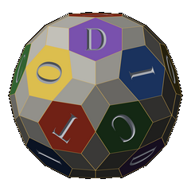
DICTO
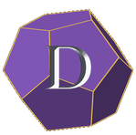
Dodecahedron- Icosahedron
- Cube
- Tetrahedron
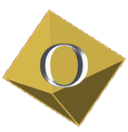
Octahedron
Sculptures from recycled PET bottles, built on the five perfect shapes, and the new geometry they led to.
Geometric sculptor in Osaka · Modular systems: B1NR / DICTOspheres · six registered Japanese designs for joining PET bottles
Work
- In the river now: The 3rd Kyoto Takasegawa Art FestivalDICTO's PET-bottle sculpture in the Takasegawa, Kyoto · 7–23 November 2026 · open 24 hours, between Sanjo and Shijo streets · festival map→
- Vacuus, as a solid cubeDICTO's build of interlocking rings · photo→
- B1NR “Int-aerium & Ext-aerium”Sculpture · Fumin Hall ALTI, Kyoto→
- Design RegistrationDICTO’s registered designs→
- RHOMBITUREAn extractable armature system for carving and modelling · doi:10.5281/zenodo.23173896→
- Kaleidohedra by DICTO on ZenodoShearable lattices, new space-fillers and the Euclid–Kepler–Pacioli (EKP) cell · always the latest version→


Start Here: three rules
- 1There are five perfect shapesThe five dice: Dodecahedron, Icosahedron, Cube, Tetrahedron, Octahedron
- 2Fill space with no gapsLike packing a car boot with no air left between the boxes
- 3Layers can stack in any orderOranges on a market stall: each layer carries straight on, or turns back
Three apps: the pieces of space
POLYHEDRAVERSE The pieces, one at a time, up close RHOMBIVERSE How pieces fill space, from 1D to 6D KALEIDOHEDRA Space in motion: whole lattices shear and slide, every piece with them New here? Try RHOMBIS, the 3D puzzle from RhombiverseBooks
Books by DICTO: his manifesto, and his papers gathered by theme. Tap a cover, or point at it, to turn it over.
 Book
Book
The Golden Ladder: Golden Cuts from Plato to the Eighth Dimension
A ladder whose rungs are dimensions, with something golden on each: one triangle of mirrors and its number, the golden bond in the plane, two golden cuts on every Platonic solid, golden pairs as slices of four-dimensional solids, four-dimensional solids whose every cell is a golden cut, and at the top E8, folding into two 600-cells one golden ratio apart. 96 pages.
DICTO DOI10.5281/zenodo.23966554 Book
Book
Quanta of Space: A Manifesto
DICTO's manifesto and the overview of the whole work: is space shared out into pieces, and which? Every paper as a short entry in six chapters, with the rule of halves at the centre; the catalogue of all the atoms has its own volume, The DICTOnary of Atoms. 110 pages.
DICTO DOI10.5281/zenodo.23754454 Book
Book
The DICTOnary of Atoms: Quanta of Space II
The companion to Quanta of Space: the catalogue of all the atoms, every named shape with its D-number and who named it, drawn one by one; the data work by work; and the known and rediscovered shapes. 59 pages.
DICTO DOI10.5281/zenodo.23966395 Book
Book
HexOct: The Hexagonality Law
with the Window Law, the Rule of Halves & the Swap Rule
Sixteen papers in one book, from DICTO's PET-bottle-cap DICTOspheres to spin ice and the two HexOct tiles. The Hexagonality Law is a law of structural crystallography: in every close-packed crystal structure, however its layers are stacked, the space is shared out into finitely many kinds of piece, borrowed whole or in half from the cubic and the hexagonal structures; pieces change only by swapping; and every count is a straight line in the structure's hexagonality, the crystallographers' share of hexagonal layers. Then the law in real materials, from hydrogen in titanium to battery cathodes, ice, diamond, nanowires and magnets. Then HexOct: every stacking is a string of just two tiles, and keyed tiles, HexOct-K, can compute. Last, new in Part IV, the Window Law, which contains the Hexagonality Law and marks its exact reach. Version 11: 134 pages with 13 plates and an index.
DICTO DOI10.5281/zenodo.23731359 Book
Book
Alicia in Wonderland: The Red & White Queens
Two regular solids of four-dimensional space, seen by their shadows and slices: the 600-cell, the White Queen, and its polar partner the 120-cell, the Red Queen, with the work that led to them, from Alicia Boole Stott's slices of 1900 to DICTO's radial cell projection. Aristotle's five pyramids turn out to be the cores of the four-dimensional solids. Version 4: 123 pages with 43 full-page plates.
DICTO DOI10.5281/zenodo.23753305 Book
Book
DICTONIC Bonds
from the Octet to the Rule of Halves
A DICTONIC bond is a pair of pieces that fill space together, and there are four: the Golden bond, Icosaxes and Unborn Axes; the Keyed bond, Lotus Jewel Axes and Dodecaxes; the Delian bond, Samson and Delilah; and the Twinned Delian bond, Sonsam and Lahdeli. Eleven papers as eleven chapters, in the order DICTO proposed: every mix of the Platonic solids fills space; the golden and Delian cuts that find the bonds; the web of shared faces as one weight slides; and the Rule of Halves for every close-packed stacking. 106 pages, with an index.
DICTO DOI10.5281/zenodo.23898027 Book
Book
The Golden Cycle: Icosahedral Shells
Cycles of Growth · Part I
Thirteen papers on icosahedral shells, from the Chain of Karma to the gnomon: the icosahedron and the dodecahedron each fill exactly as a shell round the other, the shells alternate without end and grow by φ³ each turn; six solids nest in a cycle, turned inside out it gives a second cycle, and the full turn of twelve stations is a gnomon. 122 pages, with a table of the cycles and an index.
DICTO DOI10.5281/zenodo.23752452 Book
Book
Star Cores: Spikes, Halos and Cycles
Cycles of Growth · Part II
Every solid can be divided into pyramids, one on each face, meeting at the centre; DICTO turned them inside out, and the solid becomes a star wrapped in its halo. Five papers as five chapters: the TI Star; polar spikes that always fill the layer to the halo; cores that swap back and forth; the exact gains of DICTO's growth rule; and the valley law, by which the symmetric stars freeze while the sharp-edged pieces keep growing. With a card for each of 60 shapes, six plates and the cycles in one table. 131 pages.
DICTO DOI10.5281/zenodo.23867732Papers
Short papers by DICTO, with the checks behind every claim.
 #104 Scutoid Tissues in Four DimensionsSlice a four-dimensional solid and its cells cross the slice as polygons that trade neighbours, like the scutoids of living tissue. For every simple 4D solid the number of these exchanges is fixed in advance by its h-vector; between the White and Red Queens they balance exactly, 601 each way; and the Swap Rule of close packing is solved below its old limit.DICTO DOI10.5281/zenodo.24111864Read paperView in app
#104 Scutoid Tissues in Four DimensionsSlice a four-dimensional solid and its cells cross the slice as polygons that trade neighbours, like the scutoids of living tissue. For every simple 4D solid the number of these exchanges is fixed in advance by its h-vector; between the White and Red Queens they balance exactly, 601 each way; and the Swap Rule of close packing is solved below its old limit.DICTO DOI10.5281/zenodo.24111864Read paperView in app #106 One World for the Platonic SolidsGive each Platonic solid its own size and something simple appears: every one of the five, and the cuboctahedron, fits inside a skin that makes it exactly a dodecahedron, and the rhombic dodecahedron is a cube with six pyramids. So every mix of these seven solids, all 127, fills space on one cubic grid, built almost entirely from cubes and Euclid’s roofs.DICTO DOI10.5281/zenodo.24126400Read paperView in app
#106 One World for the Platonic SolidsGive each Platonic solid its own size and something simple appears: every one of the five, and the cuboctahedron, fits inside a skin that makes it exactly a dodecahedron, and the rhombic dodecahedron is a cube with six pyramids. So every mix of these seven solids, all 127, fills space on one cubic grid, built almost entirely from cubes and Euclid’s roofs.DICTO DOI10.5281/zenodo.24126400Read paperView in app #105 DICTO 1:2 Truncated Octahedron: The 4D Vacuus of the PermutohedronWrite 1 to 5 in every order: the 120 orders are the corners of the 4D permutohedron. Its 150 faces lie in 65 central slices of four shapes, and at the heart sit five DICTO 1:2 Truncated Octahedra, squares of side 1 and hexagons with sides 1 and 2 in turn, slotted along ten regular hexagons. A count for every dimension, and DICTONIC’s golden bond as a walk through permutohedra.DICTO DOI10.5281/zenodo.24121177Read paperView in app
#105 DICTO 1:2 Truncated Octahedron: The 4D Vacuus of the PermutohedronWrite 1 to 5 in every order: the 120 orders are the corners of the 4D permutohedron. Its 150 faces lie in 65 central slices of four shapes, and at the heart sit five DICTO 1:2 Truncated Octahedra, squares of side 1 and hexagons with sides 1 and 2 in turn, slotted along ten regular hexagons. A count for every dimension, and DICTONIC’s golden bond as a walk through permutohedra.DICTO DOI10.5281/zenodo.24121177Read paperView in app Map The DICTO ConcordanceA map and almanac of the whole work, papers #1 to #94: ten threads, 217 names with who named them and where they first appear, 42 concepts explained, every thread placed on the one triangle of mirrors, and, from DICTO's idea, what is missing: gaps inside the work paired with results from other fields, physics, crystals, materials, Islamic tilings, music, each marked from to read to tested.DICTO DOI10.5281/zenodo.23934363Read
Map The DICTO ConcordanceA map and almanac of the whole work, papers #1 to #94: ten threads, 217 names with who named them and where they first appear, 42 concepts explained, every thread placed on the one triangle of mirrors, and, from DICTO's idea, what is missing: gaps inside the work paired with results from other fields, physics, crystals, materials, Islamic tilings, music, each marked from to read to tested.DICTO DOI10.5281/zenodo.23934363Read #103 The DICTO Yantra: Two Exact SolutionsThe Śrī Yantra’s nine triangles must meet three at a time in eighteen points. Kulaichev’s classical yantra, thought probably impossible to solve exactly, and the DICTO Yantra on DICTO’s Cleo-Antonius are both solved exactly here, checked forwards and backwards, and certified; only the DICTO Yantra keeps all 43 regions true triangles.DICTO DOI10.5281/zenodo.24052633Read paper
#103 The DICTO Yantra: Two Exact SolutionsThe Śrī Yantra’s nine triangles must meet three at a time in eighteen points. Kulaichev’s classical yantra, thought probably impossible to solve exactly, and the DICTO Yantra on DICTO’s Cleo-Antonius are both solved exactly here, checked forwards and backwards, and certified; only the DICTO Yantra keeps all 43 regions true triangles.DICTO DOI10.5281/zenodo.24052633Read paper #102 Every Site Hears the Same: the Loop Equality Is a TheoremThe close-packed stackings, diamond, lonsdaleite and every other, periodic or not, differ in their shells of neighbours, yet DICTO found in #74 that their closed loops do not. Now proved for every length and at every site: the number of closed non-backtracking loops is always diamond’s.DICTO DOI10.5281/zenodo.24037664Read paper
#102 Every Site Hears the Same: the Loop Equality Is a TheoremThe close-packed stackings, diamond, lonsdaleite and every other, periodic or not, differ in their shells of neighbours, yet DICTO found in #74 that their closed loops do not. Now proved for every length and at every site: the number of closed non-backtracking loops is always diamond’s.DICTO DOI10.5281/zenodo.24037664Read paper #101 Held by Shape AloneIn one layer of the octet every octahedron is locked by its neighbours against every slide and twist, while every tetrahedron lifts straight out. In the Admiral layer every cap and icosahedron is locked and only four surface pyramids are free. The locking of an octahedron layer was known; the mixed layer and the Admiral layer are new.DICTO DOI10.5281/zenodo.24030328Read paper
#101 Held by Shape AloneIn one layer of the octet every octahedron is locked by its neighbours against every slide and twist, while every tetrahedron lifts straight out. In the Admiral layer every cap and icosahedron is locked and only four surface pyramids are free. The locking of an octahedron layer was known; the mixed layer and the Admiral layer are new.DICTO DOI10.5281/zenodo.24030328Read paper #100 The Dehn Test Picks the Lone TilersA tetrahedron with its four corners cut off can fill space alone only when the cuts add up to exactly one edge, the same as cutting it by a double-size inverted tetrahedron, and for whole layers the octet’s own 2 : 1 ratio. Every such piece tested fills space with just two pieces per period. On three sweeps of solids the same test picks out exactly the lone tilers: Kelvin’s cell, the cube, the rhombic dodecahedron and the β-tin piece.DICTO DOI10.5281/zenodo.24030326Read paper
#100 The Dehn Test Picks the Lone TilersA tetrahedron with its four corners cut off can fill space alone only when the cuts add up to exactly one edge, the same as cutting it by a double-size inverted tetrahedron, and for whole layers the octet’s own 2 : 1 ratio. Every such piece tested fills space with just two pieces per period. On three sweeps of solids the same test picks out exactly the lone tilers: Kelvin’s cell, the cube, the rhombic dodecahedron and the β-tin piece.DICTO DOI10.5281/zenodo.24030326Read paper #99 Plato’s Five in the OctetAll five perfect shapes nest one inside another, like dolls, in every cell of the octet climbing frame, and the nest repeats smaller and smaller for ever.All five Platonic solids nest in every cell of the octet: the octahedron, Pacioli’s icosahedron, the dodecahedron, the octahedron’s own dual cube and a tetrahedron, and every tetrahedron of the octet holds the same nest at half size; the nest repeats for ever by thirds. Two new pieces, DICTO’s Sheriff and Lone-star, fill the icosahedron round its dodecahedron. Then a golden ladder of crystals, each a golden ratio larger than the last, climbs to the five-fold order of quasicrystals, with a nest on every icosahedral seat.DICTO DOI10.5281/zenodo.24012439Read paper
#99 Plato’s Five in the OctetAll five perfect shapes nest one inside another, like dolls, in every cell of the octet climbing frame, and the nest repeats smaller and smaller for ever.All five Platonic solids nest in every cell of the octet: the octahedron, Pacioli’s icosahedron, the dodecahedron, the octahedron’s own dual cube and a tetrahedron, and every tetrahedron of the octet holds the same nest at half size; the nest repeats for ever by thirds. Two new pieces, DICTO’s Sheriff and Lone-star, fill the icosahedron round its dodecahedron. Then a golden ladder of crystals, each a golden ratio larger than the last, climbs to the five-fold order of quasicrystals, with a nest on every icosahedral seat.DICTO DOI10.5281/zenodo.24012439Read paper #98 Narcissus and CovenantNarcissus, the piece at the end of the HexOct walk, is its own mirror image and fills space alone. Two of them joined on their hexagons make the twisted cube when put on straight, and Covenant, a parallelogram dodecahedron, when turned by 60 degrees. With the exact Dehn invariants of every HexOct piece.In the book: HexOctDICTO DOI10.5281/zenodo.24005929Read paper
#98 Narcissus and CovenantNarcissus, the piece at the end of the HexOct walk, is its own mirror image and fills space alone. Two of them joined on their hexagons make the twisted cube when put on straight, and Covenant, a parallelogram dodecahedron, when turned by 60 degrees. With the exact Dehn invariants of every HexOct piece.In the book: HexOctDICTO DOI10.5281/zenodo.24005929Read paper #97 Narcissus KeyedNarcissus fills space in layers, each put on the one below straight or turned, freely. Seventeen keyed copies carry Kari’s aperiodic tiles on their faces and force a sequence of joins that never repeats. Proved, and checked on the real solids.DICTO DOI10.5281/zenodo.24005567Read paper
#97 Narcissus KeyedNarcissus fills space in layers, each put on the one below straight or turned, freely. Seventeen keyed copies carry Kari’s aperiodic tiles on their faces and force a sequence of joins that never repeats. Proved, and checked on the real solids.DICTO DOI10.5281/zenodo.24005567Read paper #96 Reading the VoidsGrown from DICTO's work on harmonics and resonance: spherical waves run through a whole packing and go dark in its gaps; read like the electron cloud of a crystal, the gaps become rooms joined by windows; golden bricks grow into them. An exact proof shows what no golden brick can ever fill, and the rest closes: the DICTO Void Keeper completes the densest packing of the cut Ogdoecontahedron, and the DICTO Golden Skin wraps the Ogdoecontahedron among golden rhombohedra, as thin as wished.DICTO DOI10.5281/zenodo.23968272Read paper
#96 Reading the VoidsGrown from DICTO's work on harmonics and resonance: spherical waves run through a whole packing and go dark in its gaps; read like the electron cloud of a crystal, the gaps become rooms joined by windows; golden bricks grow into them. An exact proof shows what no golden brick can ever fill, and the rest closes: the DICTO Void Keeper completes the densest packing of the cut Ogdoecontahedron, and the DICTO Golden Skin wraps the Ogdoecontahedron among golden rhombohedra, as thin as wished.DICTO DOI10.5281/zenodo.23968272Read paper #95 Pentagons for the KitesDICTO proposed a pentagon in the middle of each five-kite star of the Ogdoecontahedron. One cut at each star point does it, and what is left hides the football: its 90 corners are the bond centres of the C60 molecule. From there the idea grew: an all-equal-edge version, a left and right twist, an exact proof that the cut solid never fills space alone, kits for the octet truss and every stacking, the Bull-horns adaptor made for it, and a pyrochlore network that closes into truncated octahedra.DICTO DOI10.5281/zenodo.23968270Read paper
#95 Pentagons for the KitesDICTO proposed a pentagon in the middle of each five-kite star of the Ogdoecontahedron. One cut at each star point does it, and what is left hides the football: its 90 corners are the bond centres of the C60 molecule. From there the idea grew: an all-equal-edge version, a left and right twist, an exact proof that the cut solid never fills space alone, kits for the octet truss and every stacking, the Bull-horns adaptor made for it, and a pyrochlore network that closes into truncated octahedra.DICTO DOI10.5281/zenodo.23968270Read paper #94 The Silent Golden StationListen to a solid: its corners, seen from the centre, are notes on a sphere, and each degree of spherical harmonic is a tone. Sliding from the octahedron to the cube, the cubic tone falls silent exactly once, at Icosaxes, whose corners are two icosahedra; there every tone the icosahedron lacks is silent. The eighth tone falls silent once more, at a bronze-ratio station. The same fingerprint reads the straight and twisted layers of any stacking ball by ball. From DICTO's widening of the search to harmonics and resonance.DICTO DOI10.5281/zenodo.23934349Read paper
#94 The Silent Golden StationListen to a solid: its corners, seen from the centre, are notes on a sphere, and each degree of spherical harmonic is a tone. Sliding from the octahedron to the cube, the cubic tone falls silent exactly once, at Icosaxes, whose corners are two icosahedra; there every tone the icosahedron lacks is silent. The eighth tone falls silent once more, at a bronze-ratio station. The same fingerprint reads the straight and twisted layers of any stacking ball by ball. From DICTO's widening of the search to harmonics and resonance.DICTO DOI10.5281/zenodo.23934349Read paper #93 One Double Pyramid, Two SplitsTwo cube pyramids across a face make a double pyramid. Cut across its square it gives back the cube's pyramids, which build only cubes; cut along either diagonal it gives two pyramids of the rhombic dodecahedron, and one free choice on every square of the cube lattice tiles space, uncountably many ways, never closing into a cube. So the law that pyramids rebuild their solid fails for the rhombic dodecahedron. The cubic pairings are the opposite: every caesium chloride pair, Kelvin's cell and the golden pairs among them, fills space in one way only. DICTO's idea, carrying #92's method to the cube.DICTO DOI10.5281/zenodo.23933666Read paper
#93 One Double Pyramid, Two SplitsTwo cube pyramids across a face make a double pyramid. Cut across its square it gives back the cube's pyramids, which build only cubes; cut along either diagonal it gives two pyramids of the rhombic dodecahedron, and one free choice on every square of the cube lattice tiles space, uncountably many ways, never closing into a cube. So the law that pyramids rebuild their solid fails for the rhombic dodecahedron. The cubic pairings are the opposite: every caesium chloride pair, Kelvin's cell and the golden pairs among them, fills space in one way only. DICTO's idea, carrying #92's method to the cube.DICTO DOI10.5281/zenodo.23933666Read paper #92 Aristotle's Pyramid in LayersEvery face-to-face tiling of space by the tetrahedron's and octahedron's centre pyramids is a close-packed stacking: the pyramids rebuild whole tetrahedra and octahedra (#77), and these lie in flat layers, each placed straight or twisted on the one below, one to one with the stackings of equal spheres. So there are uncountably many, including never-repeating ones. Without the face-to-face rule no finite list describes them; a cube of four of each kind of pyramid gives whole new families. DICTO's idea, settling the question #44 left open. Version 2 adds the cuboctahedron's pyramids, the same pieces with a free cut in every octahedron: they rebuild the cuboctahedron on straight layers and its twisted twin, the anticuboctahedron, on twisted ones.DICTO DOI10.5281/zenodo.23931608Read paperView in app
#92 Aristotle's Pyramid in LayersEvery face-to-face tiling of space by the tetrahedron's and octahedron's centre pyramids is a close-packed stacking: the pyramids rebuild whole tetrahedra and octahedra (#77), and these lie in flat layers, each placed straight or twisted on the one below, one to one with the stackings of equal spheres. So there are uncountably many, including never-repeating ones. Without the face-to-face rule no finite list describes them; a cube of four of each kind of pyramid gives whole new families. DICTO's idea, settling the question #44 left open. Version 2 adds the cuboctahedron's pyramids, the same pieces with a free cut in every octahedron: they rebuild the cuboctahedron on straight layers and its twisted twin, the anticuboctahedron, on twisted ones.DICTO DOI10.5281/zenodo.23931608Read paperView in app #91 Four-Dimensional Solids Whose Every Cell Is a Golden CutGrow a shape inside its partner shape and watch the overlap change: DICTO played this game into four dimensions, where it gives solids that are golden in every cell.Cut a regular solid by a growing copy of its dual and the common part sweeps from one to the other. DICTO proposed following such dual pairs through the dimensions: the tesseract cut by the 16-cell has every cell golden at exactly two sizes, the DICTO All-Golden Polytopes, and the golden pairs form closed DICTO Golden Tight Cycles at φ. Slices of the 24-cell honeycomb give Icosaxes with Unborn Axes, and a golden tilt gives the Fibonacci word.DICTO DOI10.5281/zenodo.23931389Read paper
#91 Four-Dimensional Solids Whose Every Cell Is a Golden CutGrow a shape inside its partner shape and watch the overlap change: DICTO played this game into four dimensions, where it gives solids that are golden in every cell.Cut a regular solid by a growing copy of its dual and the common part sweeps from one to the other. DICTO proposed following such dual pairs through the dimensions: the tesseract cut by the 16-cell has every cell golden at exactly two sizes, the DICTO All-Golden Polytopes, and the golden pairs form closed DICTO Golden Tight Cycles at φ. Slices of the 24-cell honeycomb give Icosaxes with Unborn Axes, and a golden tilt gives the Fibonacci word.DICTO DOI10.5281/zenodo.23931389Read paper #90 Golden on the Octahedron, Silver on the CubeThe two Golden Cut Cubes need the square root of two as well as the square root of five, so no golden structure in any dimension holds them. DICTO proposed six dimensions as the home of the cube and octahedron as a pair: their product, cut at the Fibonacci slope, gives Icosaxes exactly where the lattice casts its shadow, and on the cube side the silver ratio. The same sweep is the weight walk of the web of bonds: its sections at μ and 3 − μ fill space together.DICTO DOI10.5281/zenodo.23931136Read paper
#90 Golden on the Octahedron, Silver on the CubeThe two Golden Cut Cubes need the square root of two as well as the square root of five, so no golden structure in any dimension holds them. DICTO proposed six dimensions as the home of the cube and octahedron as a pair: their product, cut at the Fibonacci slope, gives Icosaxes exactly where the lattice casts its shadow, and on the cube side the silver ratio. The same sweep is the weight walk of the web of bonds: its sections at μ and 3 − μ fill space together.DICTO DOI10.5281/zenodo.23931136Read paper #89 All Five Golden Pairs Are Slices of Four-Dimensional SolidsSlice a four-dimensional solid like a loaf of bread, and the golden pairs of the five perfect shapes turn up among the slices: DICTO found all five.All five golden pairs of the regular solids are slices of four-dimensional solids: four in regular ones, the dodecahedra and icosahedra in the 120-cell, the tetrahedra in the tesseract, Icosaxes and Unborn Axes in the 24-cell; the cubes, which no regular one holds, are in the rectified tesseract. DICTO proposed taking the golden cuts beyond Plato, where they are rare, with none on any Archimedean solid; new are the DICTO Golden-Regular Cuts, the golden rhombic solids joining the DICTO-Kepler golden truncations, and two new DICTO-GTT-Solids.DICTO DOI10.5281/zenodo.23917931Read paperView in app
#89 All Five Golden Pairs Are Slices of Four-Dimensional SolidsSlice a four-dimensional solid like a loaf of bread, and the golden pairs of the five perfect shapes turn up among the slices: DICTO found all five.All five golden pairs of the regular solids are slices of four-dimensional solids: four in regular ones, the dodecahedra and icosahedra in the 120-cell, the tetrahedra in the tesseract, Icosaxes and Unborn Axes in the 24-cell; the cubes, which no regular one holds, are in the rectified tesseract. DICTO proposed taking the golden cuts beyond Plato, where they are rare, with none on any Archimedean solid; new are the DICTO Golden-Regular Cuts, the golden rhombic solids joining the DICTO-Kepler golden truncations, and two new DICTO-GTT-Solids.DICTO DOI10.5281/zenodo.23917931Read paperView in app #88 Every Platonic Solid Has Exactly Two Golden CutsDICTO noticed one hexagon running through his new solids: the truncated triangle. Cut every corner of a regular solid so each face keeps one golden proportion and there are exactly two cuts, the Greater and Lesser Golden Cut: ten solids in all. At the octahedron they are DICTO's Icosaxes and Unborn Axes, which fill space together, and both golden pairs are slices of the 24-cell and the 120-cell at golden heights. Families: DICTO-Kepler golden truncations and DICTO-GTT-Solids.DICTO DOI10.5281/zenodo.23896439Read paperView in app
#88 Every Platonic Solid Has Exactly Two Golden CutsDICTO noticed one hexagon running through his new solids: the truncated triangle. Cut every corner of a regular solid so each face keeps one golden proportion and there are exactly two cuts, the Greater and Lesser Golden Cut: ten solids in all. At the octahedron they are DICTO's Icosaxes and Unborn Axes, which fill space together, and both golden pairs are slices of the 24-cell and the 120-cell at golden heights. Families: DICTO-Kepler golden truncations and DICTO-GTT-Solids.DICTO DOI10.5281/zenodo.23896439Read paperView in app #87 DICTO Vacuus SolidsSplit a solid into its centre pyramids and keep only the walls between them: one fin from the centre to every edge, one strut to every corner. DICTO's Vacuus, named after Leonardo's hollowed solids, over 100 solids: the fins of a solid's dual open at π minus its dihedral angles. Mono-Strut, Mono-Length, Disc and Isofin Vacuus; DICTO's slot-together cardboard octahedron and its metal version; origami nets. The Centre Pyramids, Part II.DICTO DOI10.5281/zenodo.23896015Read paperView in app
#87 DICTO Vacuus SolidsSplit a solid into its centre pyramids and keep only the walls between them: one fin from the centre to every edge, one strut to every corner. DICTO's Vacuus, named after Leonardo's hollowed solids, over 100 solids: the fins of a solid's dual open at π minus its dihedral angles. Mono-Strut, Mono-Length, Disc and Isofin Vacuus; DICTO's slot-together cardboard octahedron and its metal version; origami nets. The Centre Pyramids, Part II.DICTO DOI10.5281/zenodo.23896015Read paperView in app #86 The HexOct FamilyOne shift makes the HexOct c-tile a single connected solid, and the pair goes on filling space at every weight of DICTO's Rule of Halves. At weight 3/8 both tiles are convex: a brick of two cubes and a twisted cube. Every close-packed stacking from two single solids.DICTO DOI10.5281/zenodo.23896076Read paperView in app
#86 The HexOct FamilyOne shift makes the HexOct c-tile a single connected solid, and the pair goes on filling space at every weight of DICTO's Rule of Halves. At weight 3/8 both tiles are convex: a brick of two cubes and a twisted cube. Every close-packed stacking from two single solids.DICTO DOI10.5281/zenodo.23896076Read paperView in app #85 Eccentric PiecesBuilt upon again and again with DICTO's valley rule, the symmetric stars freeze while seven of his pieces keep growing. One angle decides it: with mirrored spikes, an edge of dihedral angle δ keeps its valley open through step k only if (k + 1)δ ≤ 360°, so the pieces with sharp edges grow on. DICTO proposed notch pieces for Kagemusha: with Maedate its star grows most, and with Kuwagata the star of mirrored spikes stops at step three.In the book: Star CoresDICTO DOI10.5281/zenodo.23850490Read paper
#85 Eccentric PiecesBuilt upon again and again with DICTO's valley rule, the symmetric stars freeze while seven of his pieces keep growing. One angle decides it: with mirrored spikes, an edge of dihedral angle δ keeps its valley open through step k only if (k + 1)δ ≤ 360°, so the pieces with sharp edges grow on. DICTO proposed notch pieces for Kagemusha: with Maedate its star grows most, and with Kuwagata the star of mirrored spikes stops at step three.In the book: Star CoresDICTO DOI10.5281/zenodo.23850490Read paper #84 The Window LawDICTO's Hexagonality Law is the first case of a more general law: whatever a stack of close-packed layers fixes through a window of g layers is a straight-line mix of the shares of its c/h words of length g. At two layers one more number enters, and DICTO's Swap Rule is exactly the condition for a count to stay on the straight line in hexagonality. Tested with exact counts on perovskites, Frank–Kasper phases and quasicrystal approximants.In the book: HexOctDICTO DOI10.5281/zenodo.23848832Read paper
#84 The Window LawDICTO's Hexagonality Law is the first case of a more general law: whatever a stack of close-packed layers fixes through a window of g layers is a straight-line mix of the shares of its c/h words of length g. At two layers one more number enters, and DICTO's Swap Rule is exactly the condition for a count to stay on the straight line in hexagonality. Tested with exact counts on perovskites, Frank–Kasper phases and quasicrystal approximants.In the book: HexOctDICTO DOI10.5281/zenodo.23848832Read paper #83 HexOct: Knitting CrystalsDICTO proposed a fabric that is a crystal: knitted sheets as the close-packed layers, linking yarns that run straight on at a c layer and turn back at an h layer, so any stacking can be knitted into the fabric's own thickness. Version 4: the construction by hand and by machine, the mechanics and the comfort. Every stacking weighs and squashes the same; only the see-through area and the shear change. Test pieces not yet knitted.DICTO DOI10.5281/zenodo.23848271Read paperView in app
#83 HexOct: Knitting CrystalsDICTO proposed a fabric that is a crystal: knitted sheets as the close-packed layers, linking yarns that run straight on at a c layer and turn back at an h layer, so any stacking can be knitted into the fabric's own thickness. Version 4: the construction by hand and by machine, the mechanics and the comfort. Every stacking weighs and squashes the same; only the see-through area and the shear change. Test pieces not yet knitted.DICTO DOI10.5281/zenodo.23848271Read paperView in app #81 Core Cycles: when the cores of DICTO's star chains alternateTurn a solid's face pyramids outwards and keep only what the wrappings of each kind of tip share: for the truncated icosahedron this inner solid swaps the depths of the pentagons and hexagons, and the next turn swaps them back. DICTO proposed that this holds for every solid with two families of face planes, and we prove it: two turns give the solid back, scaled by one fixed factor whatever the depths. It accounts exactly for 28 of the 29 returning cores of DICTO's shapes.DICTO DOI10.5281/zenodo.23846772Read paperView in app
#81 Core Cycles: when the cores of DICTO's star chains alternateTurn a solid's face pyramids outwards and keep only what the wrappings of each kind of tip share: for the truncated icosahedron this inner solid swaps the depths of the pentagons and hexagons, and the next turn swaps them back. DICTO proposed that this holds for every solid with two families of face planes, and we prove it: two turns give the solid back, scaled by one fixed factor whatever the depths. It accounts exactly for 28 of the 29 returning cores of DICTO's shapes.DICTO DOI10.5281/zenodo.23846772Read paperView in app #80 The Gains of DICTO's Growth RuleDICTO's growth rule T puts a face through every corner of a solid; run again and again, it carries some solids back to their own shape, larger, by a factor, the chain's gain. DICTO noticed that the four-step factors of his star chains in #78, 4.944 and 11.542, come close to 5 and 12, and proposed that such factors might form a new series of ratios; we find every gain exactly, among the Platonic, Archimedean and Catalan solids and ten of DICTO's solids, which explains DICTO's near-misses exactly.DICTO DOI10.5281/zenodo.23822907Read paperView in app
#80 The Gains of DICTO's Growth RuleDICTO's growth rule T puts a face through every corner of a solid; run again and again, it carries some solids back to their own shape, larger, by a factor, the chain's gain. DICTO noticed that the four-step factors of his star chains in #78, 4.944 and 11.542, come close to 5 and 12, and proposed that such factors might form a new series of ratios; we find every gain exactly, among the Platonic, Archimedean and Catalan solids and ten of DICTO's solids, which explains DICTO's near-misses exactly.DICTO DOI10.5281/zenodo.23822907Read paperView in app #79 Star Cores of DICTO's SolidsDICTO proposed giving every one of his new shapes the star core treatment of the TI Star: face pyramids turned outwards and wrapped in a halo. Proved, and checked on the 48 convex shapes of DICTO Solids cut into face pyramids: with each spike's tip at the pole of its face plane, the halo is the solid's polar and the layer between star and halo is tiled exactly by one pyramid over each corner and one tetrahedron over each edge, for every convex solid with its centre inside.DICTO DOI10.5281/zenodo.23822905Read paperView in app
#79 Star Cores of DICTO's SolidsDICTO proposed giving every one of his new shapes the star core treatment of the TI Star: face pyramids turned outwards and wrapped in a halo. Proved, and checked on the 48 convex shapes of DICTO Solids cut into face pyramids: with each spike's tip at the pole of its face plane, the halo is the solid's polar and the layer between star and halo is tiled exactly by one pyramid over each corner and one tetrahedron over each edge, for every convex solid with its centre inside.DICTO DOI10.5281/zenodo.23822905Read paperView in app #78 The Truncated Icosahedron Star (TI Star)Cut the football shape from its centre into 32 pyramids, turn them inside out, and you have a star; DICTO found the football and the star in one endless cycle.DICTO's idea: fill the truncated icosahedron's core with its own pyramids and turn them outwards. Cut from its centre, the truncated icosahedron (TI) is exactly 12 pentagonal and 20 hexagonal pyramids; turned outwards they give the TI Star. Proved: with each spike the mirror image of its pyramid, or 1/φ of its height, TI, the TI Star, the hull of the 32 tips and TI scaled up form one turn of an endless cycle, each layer filled exactly by tetrahedra of three kinds: a doubling cycle, the TI Star twice the volume of TI, and a golden cycle, one turn φ³ in volume. The hull of the tips, the Star Halo, starts a star chain that returns to the shape of TI after four steps.In the book: The Golden CycleIn the book: Quanta of SpaceDICTO DOI10.5281/zenodo.23782577Read paper
#78 The Truncated Icosahedron Star (TI Star)Cut the football shape from its centre into 32 pyramids, turn them inside out, and you have a star; DICTO found the football and the star in one endless cycle.DICTO's idea: fill the truncated icosahedron's core with its own pyramids and turn them outwards. Cut from its centre, the truncated icosahedron (TI) is exactly 12 pentagonal and 20 hexagonal pyramids; turned outwards they give the TI Star. Proved: with each spike the mirror image of its pyramid, or 1/φ of its height, TI, the TI Star, the hull of the 32 tips and TI scaled up form one turn of an endless cycle, each layer filled exactly by tetrahedra of three kinds: a doubling cycle, the TI Star twice the volume of TI, and a golden cycle, one turn φ³ in volume. The hull of the tips, the Star Halo, starts a star chain that returns to the shape of TI after four steps.In the book: The Golden CycleIn the book: Quanta of SpaceDICTO DOI10.5281/zenodo.23782577Read paper #77 Face to Face: A New Law of Aristotle's PyramidsCut a Platonic solid from its centre to each face and it falls into congruent face pyramids. DICTO proposed the face-to-face case. Proved: in every face-to-face tiling of space by face pyramids, the pyramids round each apex make up their whole solid, so the tiling is the cubic tiling or a tiling by regular tetrahedra and octahedra, such as the octet. The dodecahedron's pyramid and the Cleo-Icos occur in no such tiling. The proof needs no computer. A search of 5,143,972 face-to-face clusters of DICTO's pieces gives only two solids with equilateral faces, the regular tetrahedron and the pentagonal bipyramid J13, neither new.In the book: Alicia in WonderlandIn the book: Quanta of SpaceDICTO DOI10.5281/zenodo.23779962Read paperView in app
#77 Face to Face: A New Law of Aristotle's PyramidsCut a Platonic solid from its centre to each face and it falls into congruent face pyramids. DICTO proposed the face-to-face case. Proved: in every face-to-face tiling of space by face pyramids, the pyramids round each apex make up their whole solid, so the tiling is the cubic tiling or a tiling by regular tetrahedra and octahedra, such as the octet. The dodecahedron's pyramid and the Cleo-Icos occur in no such tiling. The proof needs no computer. A search of 5,143,972 face-to-face clusters of DICTO's pieces gives only two solids with equilateral faces, the regular tetrahedron and the pentagonal bipyramid J13, neither new.In the book: Alicia in WonderlandIn the book: Quanta of SpaceDICTO DOI10.5281/zenodo.23779962Read paperView in app #76 Between the QueensDICTO proposed the stages that lead from one queen to the other. Cut the White Queen's corners deeper and deeper and she passes through five uniform four-dimensional solids before she becomes the Red Queen; at the midpoint, the bitruncated 600-cell, whose cells are 120 truncated icosahedra and 600 truncated tetrahedra. All seven are classical, first listed by Alicia Boole Stott in 1910. Each stage is built from the White Queen's own corners, edges, triangles and cells, with the cut positions that make every edge equal, and a complete atlas of 1402 slices and 20 shadows in the queens' four directions.In the book: Alicia in WonderlandIn the book: Quanta of SpaceDICTO DOI10.5281/zenodo.23780068Read paperView in app
#76 Between the QueensDICTO proposed the stages that lead from one queen to the other. Cut the White Queen's corners deeper and deeper and she passes through five uniform four-dimensional solids before she becomes the Red Queen; at the midpoint, the bitruncated 600-cell, whose cells are 120 truncated icosahedra and 600 truncated tetrahedra. All seven are classical, first listed by Alicia Boole Stott in 1910. Each stage is built from the White Queen's own corners, edges, triangles and cells, with the cut positions that make every edge equal, and a complete atlas of 1402 slices and 20 shadows in the queens' four directions.In the book: Alicia in WonderlandIn the book: Quanta of SpaceDICTO DOI10.5281/zenodo.23780068Read paperView in app #75 HexOct: Two Tiles for Every StackingDICTO's idea, proved exactly: every close-packed stacking is a string of just two layer tiles, HexOct, a cubic one and a hexagonal one, each one rigid unit of four pieces. Any tile sits on any tile; they meet on flat planes up to one weight and interlock beyond it, like building bricks. With keys, HexOct-K, each layer is one step of a cellular automaton, so a stack can compute.In the book: HexOctIn the book: Quanta of SpaceDICTO DOI10.5281/zenodo.23737639Read paperView in app
#75 HexOct: Two Tiles for Every StackingDICTO's idea, proved exactly: every close-packed stacking is a string of just two layer tiles, HexOct, a cubic one and a hexagonal one, each one rigid unit of four pieces. Any tile sits on any tile; they meet on flat planes up to one weight and interlock beyond it, like building bricks. With keys, HexOct-K, each layer is one step of a cellular automaton, so a stack can compute.In the book: HexOctIn the book: Quanta of SpaceDICTO DOI10.5281/zenodo.23737639Read paperView in app #74 Spin Ice and Kagome Magnets on Every StackingTiny magnets in spin ice keep a two-in, two-out rule, like the hydrogen in water ice; DICTO showed their loops, and so their frozen-in disorder, stay the same however the layers are stacked.The pyrochlore network of spin ice keeps the same closed loops on every stacking, computed to 34 bonds, so its frozen-in entropy does not depend on the stacking. In the kagome magnets each manganese atom lies on 1 + 3(1 − h) kagome planes: four in cubic Mn3Ir, one in hexagonal Mn3Sn.In the book: HexOctIn the book: Quanta of SpaceDICTO DOI10.5281/zenodo.23730421Read paperView in app
#74 Spin Ice and Kagome Magnets on Every StackingTiny magnets in spin ice keep a two-in, two-out rule, like the hydrogen in water ice; DICTO showed their loops, and so their frozen-in disorder, stay the same however the layers are stacked.The pyrochlore network of spin ice keeps the same closed loops on every stacking, computed to 34 bonds, so its frozen-in entropy does not depend on the stacking. In the kagome magnets each manganese atom lies on 1 + 3(1 − h) kagome planes: four in cubic Mn3Ir, one in hexagonal Mn3Sn.In the book: HexOctIn the book: Quanta of SpaceDICTO DOI10.5281/zenodo.23730421Read paperView in app #73 The Hexagonality Law in Real Materials VIce, diamond and nanowires. In every stacking of a tetrahedral network the eclipsed bonds number h/2 per atom. Band offsets of nanowire semiconductors lie on the law line within 4%; the energies rank tin, germanium, diamond, silicon and silicon carbide by their distance from the law; for cloud ice the law predicts heat and vapour pressure in proportion to cubicity.In the book: HexOctIn the book: Quanta of SpaceDICTO DOI10.5281/zenodo.23728921Read paperView in app
#73 The Hexagonality Law in Real Materials VIce, diamond and nanowires. In every stacking of a tetrahedral network the eclipsed bonds number h/2 per atom. Band offsets of nanowire semiconductors lie on the law line within 4%; the energies rank tin, germanium, diamond, silicon and silicon carbide by their distance from the law; for cloud ice the law predicts heat and vapour pressure in proportion to cubicity.In the book: HexOctIn the book: Quanta of SpaceDICTO DOI10.5281/zenodo.23728921Read paperView in app #72 The Hexagonality Law in Real Materials IVOxides: hexagonal perovskites and battery cathodes. Pauling's third rule and the tolerance factor become one count, 2h shared faces. BaRuO3 volumes lie on the law line and pressure walks them down; charged LiCoO2 keeps its lithium only where it shares no face.In the book: HexOctIn the book: Quanta of SpaceDICTO DOI10.5281/zenodo.23728287Read paperView in app
#72 The Hexagonality Law in Real Materials IVOxides: hexagonal perovskites and battery cathodes. Pauling's third rule and the tolerance factor become one count, 2h shared faces. BaRuO3 volumes lie on the law line and pressure walks them down; charged LiCoO2 keeps its lithium only where it shares no face.In the book: HexOctIn the book: Quanta of SpaceDICTO DOI10.5281/zenodo.23728287Read paperView in app #71 The Hexagonality Law in Real Materials IIIAlloys and hydrogen. The places hydrogen can sit in a metal follow the law exactly, so the brittle hydrides of titanium and zirconium need fully cubic layers. Magnesium LPSO alloys follow the law layer by layer; cobalt and iron come close; the high-entropy alloy CrCoNi departs.In the book: HexOctIn the book: Quanta of SpaceDICTO DOI10.5281/zenodo.23726064Read paperView in app
#71 The Hexagonality Law in Real Materials IIIAlloys and hydrogen. The places hydrogen can sit in a metal follow the law exactly, so the brittle hydrides of titanium and zirconium need fully cubic layers. Magnesium LPSO alloys follow the law layer by layer; cobalt and iron come close; the high-entropy alloy CrCoNi departs.In the book: HexOctIn the book: Quanta of SpaceDICTO DOI10.5281/zenodo.23726064Read paperView in app #70 The Hexagonality Law in Real Materials IIEntropy and pressure. The stacking entropy of hard spheres is about 90% of the law's form at close packing. Under pressure, a volume of the law's form could only tilt cubic against hexagonal; silicon carbide is pushed toward cubic, as experiments find, while silicon and germanium tilt the other way.In the book: HexOctIn the book: Quanta of SpaceDICTO DOI10.5281/zenodo.23723565Read paperView in app
#70 The Hexagonality Law in Real Materials IIEntropy and pressure. The stacking entropy of hard spheres is about 90% of the law's form at close packing. Under pressure, a volume of the law's form could only tilt cubic against hexagonal; silicon carbide is pushed toward cubic, as experiments find, while silicon and germanium tilt the other way.In the book: HexOctIn the book: Quanta of SpaceDICTO DOI10.5281/zenodo.23723565Read paperView in app #69 The Hexagonality Law and the Fibonacci StackingA never-repeating crystal in the Fibonacci order: its hexagonal layers make up exactly 1/φ² and never touch, and its pieces come in golden proportions. By the Hexagonality Law the golden ratio then enters every piece volume exactly. One kit of pieces from the two repeating stackings builds the never-repeating one.In the book: HexOctIn the book: Quanta of SpaceDICTO DOI10.5281/zenodo.23721038Read paper
#69 The Hexagonality Law and the Fibonacci StackingA never-repeating crystal in the Fibonacci order: its hexagonal layers make up exactly 1/φ² and never touch, and its pieces come in golden proportions. By the Hexagonality Law the golden ratio then enters every piece volume exactly. One kit of pieces from the two repeating stackings builds the never-repeating one.In the book: HexOctIn the book: Quanta of SpaceDICTO DOI10.5281/zenodo.23721038Read paper #68 Real Polytypes and the Hexagonality LawThe law tested on real crystals. Silicon carbide follows the straight line within its data; silicon and germanium bend by only about 0.04%, a small relaxation that ideal geometry does not have; germanium's stacking faults come close to the ideal 2 : 2 : 1. In the physicists' layer model the law means exactly: no coupling beyond the nearest layer.In the book: HexOctIn the book: Quanta of SpaceDICTO DOI10.5281/zenodo.23719275Read paperView in app
#68 Real Polytypes and the Hexagonality LawThe law tested on real crystals. Silicon carbide follows the straight line within its data; silicon and germanium bend by only about 0.04%, a small relaxation that ideal geometry does not have; germanium's stacking faults come close to the ideal 2 : 2 : 1. In the physicists' layer model the law means exactly: no coupling beyond the nearest layer.In the book: HexOctIn the book: Quanta of SpaceDICTO DOI10.5281/zenodo.23719275Read paperView in app #67 Random Stackings and Stacking FaultsThe Hexagonality Law at work. However the layers of a crystal are stacked, even at random, every kind of piece averages exactly its pure share, fixed by one measured number, the share of hexagonal layers, as in randomly stacked colloids and stacking-disordered ice. Every stacking fault moves space by whole layer shares: 1, 2 and 2 in cubic crystals, 1, 2 and 3 in hexagonal ones.In the book: HexOctIn the book: Quanta of SpaceDICTO DOI10.5281/zenodo.23718636Read paper
#67 Random Stackings and Stacking FaultsThe Hexagonality Law at work. However the layers of a crystal are stacked, even at random, every kind of piece averages exactly its pure share, fixed by one measured number, the share of hexagonal layers, as in randomly stacked colloids and stacking-disordered ice. Every stacking fault moves space by whole layer shares: 1, 2 and 2 in cubic crystals, 1, 2 and 3 in hexagonal ones.In the book: HexOctIn the book: Quanta of SpaceDICTO DOI10.5281/zenodo.23718636Read paper #66 The FocusDICTO's conclusion that everything is the same study, set out as one map of how the recent papers meet. Its theorem, the Hexagonality Law: however the layers of a crystal are stacked, each layer holds exactly what it holds in its own pure stacking, so every kind of piece totals a straight line in the share of hexagonal layers. Exact in every crystal family computed.In the book: HexOctIn the book: Quanta of SpaceDICTO DOI10.5281/zenodo.23717687Read paperView in app
#66 The FocusDICTO's conclusion that everything is the same study, set out as one map of how the recent papers meet. Its theorem, the Hexagonality Law: however the layers of a crystal are stacked, each layer holds exactly what it holds in its own pure stacking, so every kind of piece totals a straight line in the share of hexagonal layers. Exact in every crystal family computed.In the book: HexOctIn the book: Quanta of SpaceDICTO DOI10.5281/zenodo.23717687Read paperView in app #65 The Red Queen 120-cellA four-dimensional solid seen as layers, like the rings of an onion: 120 dodecahedra in nine layers, the same read forwards or backwards.The polar of the White Queen, built exactly from her: 120 dodecahedra in nine layers round one, 1, 12, 20, 12, 30, 12, 20, 12, 1, the same forwards and backwards. Its core is the dodecahedron cut into twelve pentagonal pyramids. Proved: all five of Aristotle's pyramids are the cores of the regular four-dimensional solids seen in perspective, with exactly his proportions. With a full exact atlas of 124 slice patterns and four shadows.In the book: Alicia in WonderlandIn the book: Quanta of SpaceDICTO DOI10.5281/zenodo.23716140Read paper
#65 The Red Queen 120-cellA four-dimensional solid seen as layers, like the rings of an onion: 120 dodecahedra in nine layers, the same read forwards or backwards.The polar of the White Queen, built exactly from her: 120 dodecahedra in nine layers round one, 1, 12, 20, 12, 30, 12, 20, 12, 1, the same forwards and backwards. Its core is the dodecahedron cut into twelve pentagonal pyramids. Proved: all five of Aristotle's pyramids are the cores of the regular four-dimensional solids seen in perspective, with exactly his proportions. With a full exact atlas of 124 slice patterns and four shadows.In the book: Alicia in WonderlandIn the book: Quanta of SpaceDICTO DOI10.5281/zenodo.23716140Read paper #64 The Swap Rule in CrystalsMany crystals come in a cubic and a hexagonal form and many stackings between. Here the Swap Rule holds in rock salt, cadmium iodide, zinc blende and the Laves phases, in all 299 cases where it can be tested: the two mixed pieces always add up to the two pure ones.In the book: HexOctIn the book: Quanta of SpaceDICTO DOI10.5281/zenodo.23709753Read paper
#64 The Swap Rule in CrystalsMany crystals come in a cubic and a hexagonal form and many stackings between. Here the Swap Rule holds in rock salt, cadmium iodide, zinc blende and the Laves phases, in all 299 cases where it can be tested: the two mixed pieces always add up to the two pure ones.In the book: HexOctIn the book: Quanta of SpaceDICTO DOI10.5281/zenodo.23709753Read paper #63 The White Queen 600-cellAn exact atlas of every slice and shadow of the 600-cell: 62 slice patterns, twelve all triangles, every four-sided face explained. Each shadow resolves into two exact halves. Round one vertex its 600 cells stand in fifteen shells, each of one kind of piece, round a core of twenty Cleo-Icos filling an icosahedron. Its most graceful slice is Humpty Dumpty, the 48-vertex egg.In the book: Alicia in WonderlandIn the book: Quanta of SpaceDICTO DOI10.5281/zenodo.23690856Read paperView in app
#63 The White Queen 600-cellAn exact atlas of every slice and shadow of the 600-cell: 62 slice patterns, twelve all triangles, every four-sided face explained. Each shadow resolves into two exact halves. Round one vertex its 600 cells stand in fifteen shells, each of one kind of piece, round a core of twenty Cleo-Icos filling an icosahedron. Its most graceful slice is Humpty Dumpty, the 48-vertex egg.In the book: Alicia in WonderlandIn the book: Quanta of SpaceDICTO DOI10.5281/zenodo.23690856Read paperView in app #62 Shadows of the Fourth DimensionDICTO's idea: the shadows and slices of the four-dimensional solids give new deltahedra. Two are variants of known deltahedra that join differently: one closes three round an edge, the other fills space on its own. Four slices of the 600-cell rebuild exactly with all edges equal, among them Kagemusha (was Shadow-17), two J11 glued together, and Slice-48, 92 equal triangles with tetrahedral symmetry.In the book: Alicia in WonderlandIn the book: Quanta of SpaceDICTO DOI10.5281/zenodo.23687223Read paper
#62 Shadows of the Fourth DimensionDICTO's idea: the shadows and slices of the four-dimensional solids give new deltahedra. Two are variants of known deltahedra that join differently: one closes three round an edge, the other fills space on its own. Four slices of the 600-cell rebuild exactly with all edges equal, among them Kagemusha (was Shadow-17), two J11 glued together, and Slice-48, 92 equal triangles with tetrahedral symmetry.In the book: Alicia in WonderlandIn the book: Quanta of SpaceDICTO DOI10.5281/zenodo.23687223Read paper #61 The Swap RuleSquash the layers of a close-packed stacking and its tetrahedral holes become Janus pieces too: a top from one pure stacking, a bottom from the other. DICTO named them Ganesha. Proved exactly for every stacking: the two mixed pieces always add up to the two pure ones, and true close packing is the exact border.In the book: HexOctIn the book: Quanta of SpaceDICTO DOI10.5281/zenodo.23682596Read paper
#61 The Swap RuleSquash the layers of a close-packed stacking and its tetrahedral holes become Janus pieces too: a top from one pure stacking, a bottom from the other. DICTO named them Ganesha. Proved exactly for every stacking: the two mixed pieces always add up to the two pure ones, and true close packing is the exact border.In the book: HexOctIn the book: Quanta of SpaceDICTO DOI10.5281/zenodo.23682596Read paper #60 DICTO Janus c/h PyrochloreDICTO's idea: the rule of halves of #57 on the pyrochlore network, the corner-sharing tetrahedra hidden in every diamond-like crystal, its layers stacked in any order. Proved exactly: every piece is borrowed from the pure cubic or hexagonal stacking — whole for the tetrahedra, and as Janus c/h halves for the open spaces where cubic meets hexagonal.In the book: HexOctIn the book: Quanta of SpaceDICTO DOI10.5281/zenodo.23678750Read paper
#60 DICTO Janus c/h PyrochloreDICTO's idea: the rule of halves of #57 on the pyrochlore network, the corner-sharing tetrahedra hidden in every diamond-like crystal, its layers stacked in any order. Proved exactly: every piece is borrowed from the pure cubic or hexagonal stacking — whole for the tetrahedra, and as Janus c/h halves for the open spaces where cubic meets hexagonal.In the book: HexOctIn the book: Quanta of SpaceDICTO DOI10.5281/zenodo.23678750Read paper #59 The Icosaxes Hexa: Bloom, Bud and SeedDICTO's idea: the Hexa's move — pieces passing into each other until they close — with icosahedral symmetry. Twenty Icosaxes on a dodecahedron's corners touch as an open bloom with twelve windows, close into a bud at exactly 1/φ of that distance and fill into one solid seed at exactly one third (proved exactly). In the lattice, eight Icosaxes round an Unborn Axes form a network in which every Icosaxes is shared by exactly two blocks.In the book: Quanta of SpaceIn the book: DICTONIC BondsDICTO DOI10.5281/zenodo.23677485Read paper
#59 The Icosaxes Hexa: Bloom, Bud and SeedDICTO's idea: the Hexa's move — pieces passing into each other until they close — with icosahedral symmetry. Twenty Icosaxes on a dodecahedron's corners touch as an open bloom with twelve windows, close into a bud at exactly 1/φ of that distance and fill into one solid seed at exactly one third (proved exactly). In the lattice, eight Icosaxes round an Unborn Axes form a network in which every Icosaxes is shared by exactly two blocks.In the book: Quanta of SpaceIn the book: DICTONIC BondsDICTO DOI10.5281/zenodo.23677485Read paper #58 From the Octet to Every Stacking: the Web of BondsThe story of papers #40–#57, from DICTO's PET-bottle-cap DICTOspheres to the rule of halves: however layers of equal balls are stacked, the space is shared out into pieces of only finitely many kinds, each borrowed, whole or in half, from the cubic and the hexagonal stackings. Endless variety of order, from a finite set of quanta.In the book: HexOctIn the book: Quanta of SpaceIn the book: DICTONIC BondsDICTO DOI10.5281/zenodo.23665944Read paperView in app
#58 From the Octet to Every Stacking: the Web of BondsThe story of papers #40–#57, from DICTO's PET-bottle-cap DICTOspheres to the rule of halves: however layers of equal balls are stacked, the space is shared out into pieces of only finitely many kinds, each borrowed, whole or in half, from the cubic and the hexagonal stackings. Endless variety of order, from a finite set of quanta.In the book: HexOctIn the book: Quanta of SpaceIn the book: DICTONIC BondsDICTO DOI10.5281/zenodo.23665944Read paperView in app #57 The Rule of HalvesDICTO's idea: follow the web of bonds onto every way of stacking close-packed layers. Proved exactly: each gap's piece comes from the two pure stackings, cubic and hexagonal. A tetrahedral gap takes the piece of its nearest layer; an octahedral gap is a top half and a bottom half, each from the layer on its side. So all stackings share a finite catalogue of pieces, and where a cubic layer meets a hexagonal one appear the Janus c/h pieces, half of each, named by DICTO: Chucky and Fang.In the book: HexOctIn the book: Quanta of SpaceIn the book: DICTONIC BondsDICTO DOI10.5281/zenodo.23647898Read paperView in app
#57 The Rule of HalvesDICTO's idea: follow the web of bonds onto every way of stacking close-packed layers. Proved exactly: each gap's piece comes from the two pure stackings, cubic and hexagonal. A tetrahedral gap takes the piece of its nearest layer; an octahedral gap is a top half and a bottom half, each from the layer on its side. So all stackings share a finite catalogue of pieces, and where a cubic layer meets a hexagonal one appear the Janus c/h pieces, half of each, named by DICTO: Chucky and Fang.In the book: HexOctIn the book: Quanta of SpaceIn the book: DICTONIC BondsDICTO DOI10.5281/zenodo.23647898Read paperView in app #56 Sonsam and LahdeliNames by DICTO. Follow the web of bonds on the mirrored (hexagonal) stacking of the octet: it has its own equal-volume pair, Sonsam and Lahdeli, the twins of Samson and Delilah, then a stop the cubic side never makes, Ian Dury with the 60° rhombohedron, and ends in Blockheads where the cubic side ends in cubes. Keys change the pieces but never the web: Sonsam-K, Lahdeli-K, Ian Dury-K, Rhombo-K. And the Sunstar (#42) is rock salt's switch point keyed with Euclid's roofs. Proved exactly.In the book: Quanta of SpaceIn the book: DICTONIC BondsDICTO DOI10.5281/zenodo.23635823Read paper
#56 Sonsam and LahdeliNames by DICTO. Follow the web of bonds on the mirrored (hexagonal) stacking of the octet: it has its own equal-volume pair, Sonsam and Lahdeli, the twins of Samson and Delilah, then a stop the cubic side never makes, Ian Dury with the 60° rhombohedron, and ends in Blockheads where the cubic side ends in cubes. Keys change the pieces but never the web: Sonsam-K, Lahdeli-K, Ian Dury-K, Rhombo-K. And the Sunstar (#42) is rock salt's switch point keyed with Euclid's roofs. Proved exactly.In the book: Quanta of SpaceIn the book: DICTONIC BondsDICTO DOI10.5281/zenodo.23635823Read paper #55 David and GoliathNames by DICTO. Slide the weight in the A15 alloy structure and at one exact point the space falls into two pieces: Goliath, Jessen's famous icosahedron filled out to a convex solid, and David, a small tetrahedron that touches only Goliaths. It is the classical A15 picture of Frank and Kasper, reached by the global web of bonds (#53); with the octet, rock salt and zinc blende pairs it supports the theorem. Proved exactly.In the book: Quanta of SpaceIn the book: DICTONIC BondsDICTO DOI10.5281/zenodo.23632358Read paper
#55 David and GoliathNames by DICTO. Slide the weight in the A15 alloy structure and at one exact point the space falls into two pieces: Goliath, Jessen's famous icosahedron filled out to a convex solid, and David, a small tetrahedron that touches only Goliaths. It is the classical A15 picture of Frank and Kasper, reached by the global web of bonds (#53); with the octet, rock salt and zinc blende pairs it supports the theorem. Proved exactly.In the book: Quanta of SpaceIn the book: DICTONIC BondsDICTO DOI10.5281/zenodo.23632358Read paper #54 One Turn Is a GnomonA gnomon is the piece that turns a shape into a bigger copy of itself, as each new chamber of a seashell does; DICTO carried it into three dimensions.DICTO's idea: carry the classical gnomon, the piece that makes a figure into a larger copy of itself, into three dimensions through his golden cycle of twelve nested solids. Built exactly, step by step: only the whole turn is a gnomon, the next icosahedron φ³ larger; no single step is. The step pieces are named Julias and Pimentels by DICTO, in tribute to Júlia Pimentel's square method. Also: the polar of the keyed pair.In the book: The Golden CycleIn the book: Quanta of SpaceDICTO DOI10.5281/zenodo.23633365Read paper
#54 One Turn Is a GnomonA gnomon is the piece that turns a shape into a bigger copy of itself, as each new chamber of a seashell does; DICTO carried it into three dimensions.DICTO's idea: carry the classical gnomon, the piece that makes a figure into a larger copy of itself, into three dimensions through his golden cycle of twelve nested solids. Built exactly, step by step: only the whole turn is a gnomon, the next icosahedron φ³ larger; no single step is. The step pieces are named Julias and Pimentels by DICTO, in tribute to Júlia Pimentel's square method. Also: the polar of the keyed pair.In the book: The Golden CycleIn the book: Quanta of SpaceDICTO DOI10.5281/zenodo.23633365Read paper #53 The Global Web of BondsDICTO's idea: the DICTONIC hand-overs should show up elsewhere in other networks. Proved for ten classical crystal networks and the perovskite: every weight walk exactly, every switch, and the bonds on every stretch. Both DICTONIC styles recur: a single switch where only unlike bonds remain (the square tiling, the trihexagonal tiling, rock salt's cubes, the octet), and gradual hand-overs elsewhere. And the bond between unlike pieces can never break while both kinds exist.In the book: Quanta of SpaceIn the book: DICTONIC BondsDICTO DOI10.5281/zenodo.23631140Read paperView in app
#53 The Global Web of BondsDICTO's idea: the DICTONIC hand-overs should show up elsewhere in other networks. Proved for ten classical crystal networks and the perovskite: every weight walk exactly, every switch, and the bonds on every stretch. Both DICTONIC styles recur: a single switch where only unlike bonds remain (the square tiling, the trihexagonal tiling, rock salt's cubes, the octet), and gradual hand-overs elsewhere. And the bond between unlike pieces can never break while both kinds exist.In the book: Quanta of SpaceIn the book: DICTONIC BondsDICTO DOI10.5281/zenodo.23631140Read paperView in app #52 The Web of BondsDICTO's idea: the network of bonds of the DICTONIC SOLIDS should make a web of lattices that changes with the rhythm of the loop. Proved: both loops are weighted tilings of fixed points, the caesium chloride and fluorite crystal structures, and the web of bonds is their exact dual. The golden bonds hand over gradually, with no switch; the Delian bonds hand over at the octet, the one point where a single kind of bond holds both pieces. Read as atoms, the weights are squared atom sizes, the touching ranges end at Pauling's limits, and real crystals sit on the loops.In the book: Quanta of SpaceIn the book: DICTONIC BondsDICTO DOI10.5281/zenodo.23629252Read paperView in app
#52 The Web of BondsDICTO's idea: the network of bonds of the DICTONIC SOLIDS should make a web of lattices that changes with the rhythm of the loop. Proved: both loops are weighted tilings of fixed points, the caesium chloride and fluorite crystal structures, and the web of bonds is their exact dual. The golden bonds hand over gradually, with no switch; the Delian bonds hand over at the octet, the one point where a single kind of bond holds both pieces. Read as atoms, the weights are squared atom sizes, the touching ranges end at Pauling's limits, and real crystals sit on the loops.In the book: Quanta of SpaceIn the book: DICTONIC BondsDICTO DOI10.5281/zenodo.23629252Read paperView in app #51 The Delian BondDICTO's idea: do for the tetrahedron, octahedron and cube what #48 did for the icosahedron. One sliding cut through the octet's tetrahedra and octahedra gives two convex solids that fill space at every position, from Kepler's rhombic dodecahedron to the cube. At one cut they have exactly equal volume, one doubled and one halved, as in the ancient Delian problem: DICTO's Samson and Delilah. With #48, the six DICTONIC SOLIDS in three DICTONIC BONDS. Proved exactly.In the book: Quanta of SpaceIn the book: DICTONIC BondsDICTO DOI10.5281/zenodo.23606828Read paperView in app
#51 The Delian BondDICTO's idea: do for the tetrahedron, octahedron and cube what #48 did for the icosahedron. One sliding cut through the octet's tetrahedra and octahedra gives two convex solids that fill space at every position, from Kepler's rhombic dodecahedron to the cube. At one cut they have exactly equal volume, one doubled and one halved, as in the ancient Delian problem: DICTO's Samson and Delilah. With #48, the six DICTONIC SOLIDS in three DICTONIC BONDS. Proved exactly.In the book: Quanta of SpaceIn the book: DICTONIC BondsDICTO DOI10.5281/zenodo.23606828Read paperView in app #50 One Move EachDICTO's idea: solids that the books build by cutting and gluing appear in his app whole. Proved: five classical space-fillers, among them the elongated, Bain and Bilinski dodecahedra and the 60° rhombohedron, each come from one setting of Kaleidohedra's lattice moves, with exact corners, volumes and symmetry, and match their classical constructions corner by corner.In the book: Quanta of SpaceIn the book: DICTONIC BondsDICTO DOI10.5281/zenodo.23606894Read paper
#50 One Move EachDICTO's idea: solids that the books build by cutting and gluing appear in his app whole. Proved: five classical space-fillers, among them the elongated, Bain and Bilinski dodecahedra and the 60° rhombohedron, each come from one setting of Kaleidohedra's lattice moves, with exact corners, volumes and symmetry, and match their classical constructions corner by corner.In the book: Quanta of SpaceIn the book: DICTONIC BondsDICTO DOI10.5281/zenodo.23606894Read paper #49 The Polyhedral Stretching TheoremSlide any solid with equal edges one edge-length in a straight line, and the shape it sweeps through still has every edge the same length, unless the slide runs along one of its edges. Proved, and applied to the dodecahedron: DICTO's stretched solids, including the member that began as a long hexagon DICTO saw in #47, three- and four-cap forms, and a new-looking stretched icosahedron family. Printable nets and a telescoping paper model attached.In the book: Quanta of SpaceDICTO DOI10.5281/zenodo.23566671Read paperView in app
#49 The Polyhedral Stretching TheoremSlide any solid with equal edges one edge-length in a straight line, and the shape it sweeps through still has every edge the same length, unless the slide runs along one of its edges. Proved, and applied to the dodecahedron: DICTO's stretched solids, including the member that began as a long hexagon DICTO saw in #47, three- and four-cap forms, and a new-looking stretched icosahedron family. Printable nets and a telescoping paper model attached.In the book: Quanta of SpaceDICTO DOI10.5281/zenodo.23566671Read paperView in app #48 The Golden SplitDICTO's idea: icosahedra in a cubic grid leave gaps whose thin AXE pieces always stuck out. Cut every AXE at its golden point and share it out: the icosahedra and the Unborns become two convex truncated octahedra, DICTO's Icosaxes and Unborn Axes, that fill space. Proved exactly, and the only point that works; the Lotus Jewel version gives a keyed pair, Lotus Jewel Axes and Dodecaxes, volumes √5 and 2. The second pass of #47's mixed Platonic search.In the book: Quanta of SpaceIn the book: DICTONIC BondsDICTO DOI10.5281/zenodo.23596362Read paperView in app
#48 The Golden SplitDICTO's idea: icosahedra in a cubic grid leave gaps whose thin AXE pieces always stuck out. Cut every AXE at its golden point and share it out: the icosahedra and the Unborns become two convex truncated octahedra, DICTO's Icosaxes and Unborn Axes, that fill space. Proved exactly, and the only point that works; the Lotus Jewel version gives a keyed pair, Lotus Jewel Axes and Dodecaxes, volumes √5 and 2. The second pass of #47's mixed Platonic search.In the book: Quanta of SpaceIn the book: DICTONIC BondsDICTO DOI10.5281/zenodo.23596362Read paperView in app #47 Every Mix of the Platonic Solids Fills SpaceDICTO's idea: connect the Platonic solids in any combination. Proved: every one of the 31 mixes of D·I·C·T·O (dodecahedron, icosahedron, cube, tetrahedron, octahedron), all at one edge length, fills space with only seven helper pieces, among them DICTO's Admiral Caps and the Dogstar. The proof is a layer cake: one flat layer per solid, stacked.In the book: Quanta of SpaceIn the book: DICTONIC BondsDICTO DOI10.5281/zenodo.23551326Read paperView in app
#47 Every Mix of the Platonic Solids Fills SpaceDICTO's idea: connect the Platonic solids in any combination. Proved: every one of the 31 mixes of D·I·C·T·O (dodecahedron, icosahedron, cube, tetrahedron, octahedron), all at one edge length, fills space with only seven helper pieces, among them DICTO's Admiral Caps and the Dogstar. The proof is a layer cake: one flat layer per solid, stacked.In the book: Quanta of SpaceIn the book: DICTONIC BondsDICTO DOI10.5281/zenodo.23551326Read paperView in app #45 The Reuleaux Platonic SolidsDICTO's idea: a ball on every corner of a Platonic solid, as wide as the solid. Proved: the narrowest width is exactly the solid's span, and along each face axis the width has one exact formula, so the cube and octahedron give the same value, and so do the dodecahedron and icosahedron.In the book: Quanta of SpaceDICTO DOI10.5281/zenodo.23529499Read paperView in app
#45 The Reuleaux Platonic SolidsDICTO's idea: a ball on every corner of a Platonic solid, as wide as the solid. Proved: the narrowest width is exactly the solid's span, and along each face axis the width has one exact formula, so the cube and octahedron give the same value, and so do the dodecahedron and icosahedron.In the book: Quanta of SpaceDICTO DOI10.5281/zenodo.23529499Read paperView in app #44 Aristotle's PyramidAristotle said the pyramid and the cube fill space. Proved: of the five Platonic face pyramids, only the cube's alone, or the tetrahedron's with the octahedron's, can fill space; the dodecahedron's and the Cleo-Icos never can. The golden fix: Cleo-Icos with Antonius.In the book: Alicia in WonderlandIn the book: Quanta of SpaceDICTO DOI10.5281/zenodo.23529497Read paperView in app
#44 Aristotle's PyramidAristotle said the pyramid and the cube fill space. Proved: of the five Platonic face pyramids, only the cube's alone, or the tetrahedron's with the octahedron's, can fill space; the dodecahedron's and the Cleo-Icos never can. The golden fix: Cleo-Icos with Antonius.In the book: Alicia in WonderlandIn the book: Quanta of SpaceDICTO DOI10.5281/zenodo.23529497Read paperView in app #43 DICTO Kyushindo CoresTowers and spires round exact cores in Fibonacci beats: Cleo Towers, the OG core of 80 Aktis, the OTT rays, and the OG turned out at the golden step. Proved: every icosahedral solid sits inside φ times its foot-point hull, so the golden tower nests for ever. With seven new solids, DICTO's ribbons and the full tower catalogue.In the book: The Golden CycleIn the book: Quanta of SpaceDICTO DOI10.5281/zenodo.23532013Read paper
#43 DICTO Kyushindo CoresTowers and spires round exact cores in Fibonacci beats: Cleo Towers, the OG core of 80 Aktis, the OTT rays, and the OG turned out at the golden step. Proved: every icosahedral solid sits inside φ times its foot-point hull, so the golden tower nests for ever. With seven new solids, DICTO's ribbons and the full tower catalogue.In the book: The Golden CycleIn the book: Quanta of SpaceDICTO DOI10.5281/zenodo.23532013Read paper #42 The DICTO SunstarThe Jewel's twin: regular dodecahedra and Dogstars fill space. The Dogstar pinned down exactly as a stellation, the Star Chain Reaction fitting with no room to spare, the Sunstar-Tetra, Sunstar-Octa and Sunstar-Rhombi, and the Sunstar-Hexa and its Key, all proved exactly.In the book: Quanta of SpaceDICTO DOI10.5281/zenodo.23497702Read paperView in app
#42 The DICTO SunstarThe Jewel's twin: regular dodecahedra and Dogstars fill space. The Dogstar pinned down exactly as a stellation, the Star Chain Reaction fitting with no room to spare, the Sunstar-Tetra, Sunstar-Octa and Sunstar-Rhombi, and the Sunstar-Hexa and its Key, all proved exactly.In the book: Quanta of SpaceDICTO DOI10.5281/zenodo.23497702Read paperView in app #41 The DICTO JewelEuclid's dodecahedron carved by its neighbours' stellas: twelve Penrose windows, volume exactly 3/16 of a Hexa's cube, and with stellas it fills space. The Jewel-Tetra, Jewel-Octa and Jewel-Rhombi as single solids, every way they tile with loose stellas, the octet pattern, and the Hexa and Hexa-Key, all proved exactly.In the book: Quanta of SpaceDICTO DOI10.5281/zenodo.23496353Read paperView in app
#41 The DICTO JewelEuclid's dodecahedron carved by its neighbours' stellas: twelve Penrose windows, volume exactly 3/16 of a Hexa's cube, and with stellas it fills space. The Jewel-Tetra, Jewel-Octa and Jewel-Rhombi as single solids, every way they tile with loose stellas, the octet pattern, and the Hexa and Hexa-Key, all proved exactly.In the book: Quanta of SpaceDICTO DOI10.5281/zenodo.23496353Read paperView in app #40 The DICTO OG Family on Every StackingThe OG on every stacking: one exact kit builds the octet, the gyrated octet, the classical polytypes and a Fibonacci crystal that never repeats. Two short rules say why: the twin rule (the mirror twin is the solid turned 60°, the spinel law) and the fit rule (a solid that stays in its layer fits every stacking). The DBT fits every stacking; its two flat cuts are exactly what the golden envelope lacks.In the book: Quanta of SpaceDICTO DOI10.5281/zenodo.23490114Read paperView in app
#40 The DICTO OG Family on Every StackingThe OG on every stacking: one exact kit builds the octet, the gyrated octet, the classical polytypes and a Fibonacci crystal that never repeats. Two short rules say why: the twin rule (the mirror twin is the solid turned 60°, the spinel law) and the fit rule (a solid that stays in its layer fits every stacking). The DBT fits every stacking; its two flat cuts are exactly what the golden envelope lacks.In the book: Quanta of SpaceDICTO DOI10.5281/zenodo.23490114Read paperView in app #39 The DICTO OG FamilyFour Steps Up and Four Down. Universal PiTet's step run from the Ogdoecontahedron, outward and in reverse: eight new icosahedral solids, the DICTO KRE, PHE, TPP and DPHP up and the DICTO TPH, TQH, TQP and TQHD down, all exact. Near the OG the shells nest and are filled exactly by one piece per face; then both directions break the same way, 60 corners poking through.In the book: The Golden CycleIn the book: Quanta of SpaceDICTO DOI10.5281/zenodo.23488944Read paperView in app
#39 The DICTO OG FamilyFour Steps Up and Four Down. Universal PiTet's step run from the Ogdoecontahedron, outward and in reverse: eight new icosahedral solids, the DICTO KRE, PHE, TPP and DPHP up and the DICTO TPH, TQH, TQP and TQHD down, all exact. Near the OG the shells nest and are filled exactly by one piece per face; then both directions break the same way, 60 corners poking through.In the book: The Golden CycleIn the book: Quanta of SpaceDICTO DOI10.5281/zenodo.23488944Read paperView in app #38 Universal PiTetThe DICTO PiTet Proposition. From the Cleo star outward in spherical shells: each new solid has its faces through the last one's corners, and the icosidodecahedron, rhombic triacontahedron, DICTO GTI and DICTO FPD return as the icosidodecahedron exactly 10/φ⁴ larger, for ever. The cycle is its own polar; every shell is filled by exact pieces, with five-sided Vajras and pure hexagonal Cleos on the way. Exact in every step.In the book: The Golden CycleIn the book: Quanta of SpaceDICTO DOI10.5281/zenodo.23463305Read paperView in app
#38 Universal PiTetThe DICTO PiTet Proposition. From the Cleo star outward in spherical shells: each new solid has its faces through the last one's corners, and the icosidodecahedron, rhombic triacontahedron, DICTO GTI and DICTO FPD return as the icosidodecahedron exactly 10/φ⁴ larger, for ever. The cycle is its own polar; every shell is filled by exact pieces, with five-sided Vajras and pure hexagonal Cleos on the way. Exact in every step.In the book: The Golden CycleIn the book: Quanta of SpaceDICTO DOI10.5281/zenodo.23463305Read paperView in app #38a The DICTO Kepler–Poinsot–UP CycleTwo of Kepler's spiky stars, one inside the other like Russian dolls, and the nesting goes on for ever, each doll the same golden step larger.The tall companion to Universal PiTet: Kepler's great and small stellated dodecahedra nested in an endless φ³ cycle. Every shell is filled exactly by the Cleo star's pattern, first with DICTO's CLEO, cap and AXE; the stars' points (φ², φ) are met by inward pyramids that are their golden reciprocals (1/φ², 1/φ). A short companion, exact in every number.DICTO DOI10.5281/zenodo.23464021Read paperView in app
#38a The DICTO Kepler–Poinsot–UP CycleTwo of Kepler's spiky stars, one inside the other like Russian dolls, and the nesting goes on for ever, each doll the same golden step larger.The tall companion to Universal PiTet: Kepler's great and small stellated dodecahedra nested in an endless φ³ cycle. Every shell is filled exactly by the Cleo star's pattern, first with DICTO's CLEO, cap and AXE; the stars' points (φ², φ) are met by inward pyramids that are their golden reciprocals (1/φ², 1/φ). A short companion, exact in every number.DICTO DOI10.5281/zenodo.23464021Read paperView in app #37 The DICTO Ogdoecontahedron on the Octet TrussThe OG sits exactly in the octahedra of the octet truss, and the space round it becomes four families of exact space-filling kits: golden-section keys; an exact Penrose link between facing five-fold stars, with three Penrose cores; golden envelopes that fill exactly 10/φ⁶ of space, with a two-shape kit and a tetartoid core; and one-piece glue with exact OG imprints, keyed with the OG's own kites so that twelve lock round one OG.In the book: Quanta of SpaceDICTO DOI10.5281/zenodo.23457016Read paperView in app
#37 The DICTO Ogdoecontahedron on the Octet TrussThe OG sits exactly in the octahedra of the octet truss, and the space round it becomes four families of exact space-filling kits: golden-section keys; an exact Penrose link between facing five-fold stars, with three Penrose cores; golden envelopes that fill exactly 10/φ⁶ of space, with a two-shape kit and a tetartoid core; and one-piece glue with exact OG imprints, keyed with the OG's own kites so that twelve lock round one OG.In the book: Quanta of SpaceDICTO DOI10.5281/zenodo.23457016Read paperView in app #37a The DICTO Ogdoecontahedron on the Gyrated OctetThe companion to #37. In the gyrated octet, stacked A B A B, every layer is a twin boundary: the OG across it is its mirror image, exactly the OG turned 60° (the spinel law). One exact cell kit fills the octet, the gyrated octet and every stacking between, with twin caps, bipyramids and a mirror middle piece. The OCD Stella twins too; the golden envelope, cut flat at two corners, becomes the DICTO Belted Triacontahedron, which fills the octahedra pole to pole.DICTO DOI10.5281/zenodo.23484012Read paperView in app
#37a The DICTO Ogdoecontahedron on the Gyrated OctetThe companion to #37. In the gyrated octet, stacked A B A B, every layer is a twin boundary: the OG across it is its mirror image, exactly the OG turned 60° (the spinel law). One exact cell kit fills the octet, the gyrated octet and every stacking between, with twin caps, bipyramids and a mirror middle piece. The OCD Stella twins too; the golden envelope, cut flat at two corners, becomes the DICTO Belted Triacontahedron, which fills the octahedra pole to pole.DICTO DOI10.5281/zenodo.23484012Read paperView in app #36 Golden Bodhi PyrochloreThe gap of the Ogdoecontahedron's bcc packing, 22.57% of space, exact: 72 cone pieces; limbs that cross in golden rhombi; a golden fill that shatters canonically; the GBPC, the one adapter every golden fill needs; what is left has no face-to-face tiling by golden rhombohedra. And DICTO's answer for the whole gap: one piece, the Bull-horns OG adaptor, three per copy, filling space exactly with the OGs.In the book: Quanta of SpaceDICTO DOI10.5281/zenodo.23451210Read paperView in app
#36 Golden Bodhi PyrochloreThe gap of the Ogdoecontahedron's bcc packing, 22.57% of space, exact: 72 cone pieces; limbs that cross in golden rhombi; a golden fill that shatters canonically; the GBPC, the one adapter every golden fill needs; what is left has no face-to-face tiling by golden rhombohedra. And DICTO's answer for the whole gap: one piece, the Bull-horns OG adaptor, three per copy, filling space exactly with the OGs.In the book: Quanta of SpaceDICTO DOI10.5281/zenodo.23451210Read paperView in app #35 VajrayanaA companion to Progenitors. The dodecahedron returns inside the golden cycle as the hull of DICTO's Cleo star, filled exactly by 82 pieces of four kinds. The last loose step, from the rhombic triacontahedron to the next icosahedron, is closed by a new solid that touches both, the DICTO Metaxyhexecontahedron, each of its two layers one kind of piece. The cycle grows to twelve stations. Exact in every step.In the book: The Golden CycleIn the book: Quanta of SpaceDICTO DOI10.5281/zenodo.23429911Read paperView in app
#35 VajrayanaA companion to Progenitors. The dodecahedron returns inside the golden cycle as the hull of DICTO's Cleo star, filled exactly by 82 pieces of four kinds. The last loose step, from the rhombic triacontahedron to the next icosahedron, is closed by a new solid that touches both, the DICTO Metaxyhexecontahedron, each of its two layers one kind of piece. The cycle grows to twelve stations. Exact in every step.In the book: The Golden CycleIn the book: Quanta of SpaceDICTO DOI10.5281/zenodo.23429911Read paperView in app #35a The DICTO MetaxyhexecontahedronThe solid in the last gap of the golden cycle: the hull of an icosahedron and a dodecahedron whose edges stand exactly at 9/φ⁴. 60 triangles, an insphere, no midsphere; it touches the rhombic triacontahedron and the next icosahedron, each of its two layers one kind of piece. A short introduction, exact in every number.DICTO DOI10.5281/zenodo.23430864Read paperView in app
#35a The DICTO MetaxyhexecontahedronThe solid in the last gap of the golden cycle: the hull of an icosahedron and a dodecahedron whose edges stand exactly at 9/φ⁴. 60 triangles, an insphere, no midsphere; it touches the rhombic triacontahedron and the next icosahedron, each of its two layers one kind of piece. A short introduction, exact in every number.DICTO DOI10.5281/zenodo.23430864Read paperView in app #35b The DICTO PalintriacontahedronThe icosidodecahedron's own central pyramids flipped out at full height: the hull of the 32 tips has 60 triangles, each half a rhombic-dodecahedron rhombus, the rhombic triacontahedron turned inside out. It interlocks with the next icosahedron, bridging one turn of the golden cycle to the next. A short introduction, exact in every number.DICTO DOI10.5281/zenodo.23430866Read paperView in app
#35b The DICTO PalintriacontahedronThe icosidodecahedron's own central pyramids flipped out at full height: the hull of the 32 tips has 60 triangles, each half a rhombic-dodecahedron rhombus, the rhombic triacontahedron turned inside out. It interlocks with the next icosahedron, bridging one turn of the golden cycle to the next. A short introduction, exact in every number.DICTO DOI10.5281/zenodo.23430866Read paperView in app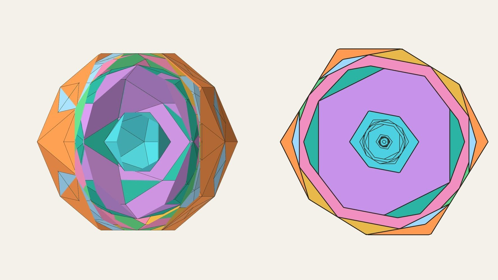
#34 ProgenitorsThe DICTO Hecatodihedron and Ogdoecontahedron as a twin pair. On their own they never close golden: tight nestings with their classical relatives are governed by 3. Set into the Spheres of Dharma in the dodecahedron's place, they close it again on φ⁹, and the cycle holds the core and hull of two dual compounds. Exact in every step.In the book: The Golden CycleIn the book: Quanta of SpaceDICTO DOI10.5281/zenodo.23413184Read paperView in app #34a The DICTO HecatogdoecontahedronThe DICTO Hecatodihedron and its polar, the DICTO Ogdoecontahedron, interlock in the truncated icosahedron's midsphere as one self-dual compound: 182 faces and 182 corners. Its core and hull are the classical rectified and joined truncated icosahedron; the pairing and the name are what is new. A short introduction, exact in every number.DICTO DOI10.5281/zenodo.23430868Read paperView in app
#34a The DICTO HecatogdoecontahedronThe DICTO Hecatodihedron and its polar, the DICTO Ogdoecontahedron, interlock in the truncated icosahedron's midsphere as one self-dual compound: 182 faces and 182 corners. Its core and hull are the classical rectified and joined truncated icosahedron; the pairing and the name are what is new. A short introduction, exact in every number.DICTO DOI10.5281/zenodo.23430868Read paperView in app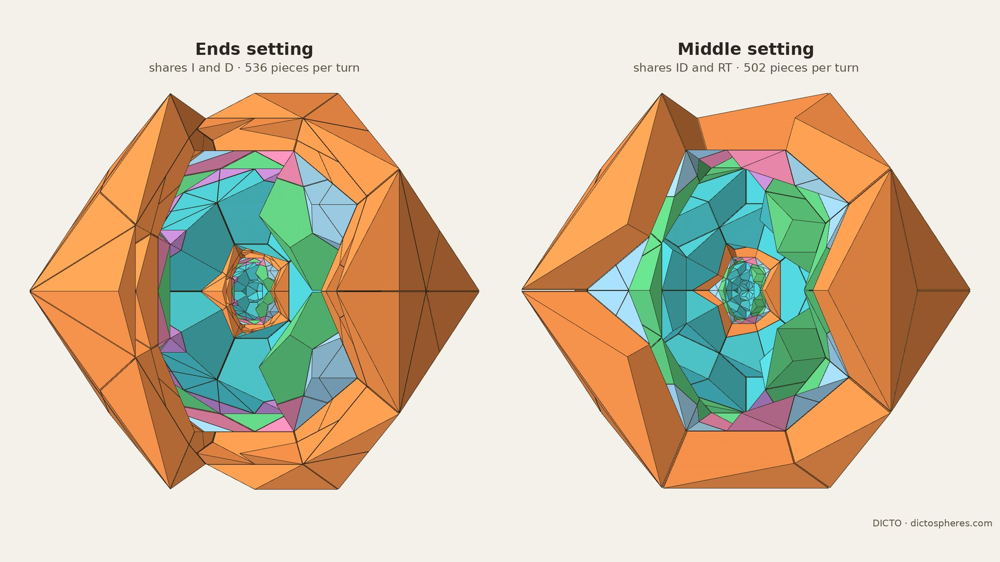
#33 Double Vision – Both Cycles in One SpaceThe Spheres of Dharma and their inside-out reversal placed in one space. One sphere of reciprocation toggles which shells the two cycles share, and no sphere gives both settings. Cut against each other, the two cycles make one solid of convex pieces, exact in every piece: 536 pieces of 12 kinds per turn in one setting, 502 of 11 in the other.In the book: The Golden CycleIn the book: Quanta of SpaceDICTO DOI10.5281/zenodo.23407106Read paperView in app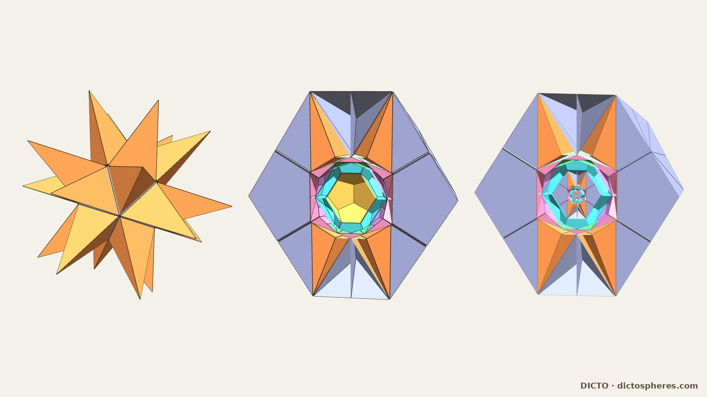
#32 Inverted Shells: The Spheres of Dharma Turned Inside OutPolar reciprocation turns the Spheres of Dharma inside out into a new exact golden cycle, every layer filled by one kind of piece. The great stellated dodecahedron locks into its outer gap at exactly one size, a dual pair fits its inner gap in reverse order, and the cycle repeats inward without end.In the book: The Golden CycleIn the book: Quanta of SpaceDICTO DOI10.5281/zenodo.23405029Read paperView in app #31 The DICTO OgdoecontahedronThe Spheres of Dharma turned inside out: the polar dual of the Hecatodihedron, a convex solid of 20 regular hexagons and 60 kites, exact in every coordinate. Joined on its hexagons it forms pyrochlore networks and a body-centred cubic packing filling exactly 77.43% of space.In the book: Quanta of SpaceDICTO DOI10.5281/zenodo.23404688Read paperView in app
#31 The DICTO OgdoecontahedronThe Spheres of Dharma turned inside out: the polar dual of the Hecatodihedron, a convex solid of 20 regular hexagons and 60 kites, exact in every coordinate. Joined on its hexagons it forms pyrochlore networks and a body-centred cubic packing filling exactly 77.43% of space.In the book: Quanta of SpaceDICTO DOI10.5281/zenodo.23404688Read paperView in app #31a The DICTO OCD StellaAround one of DICTO's Ogdoecontahedra, packed in its crystal, small golden pieces gather into a 50-faced star, the OCD Stella; copies of it fill about 87% of a room.The golden adapter pieces round one Ogdoecontahedron in its body-centred cubic packing have an icosahedral hull; cut along the 8 joints it is the OCD Stella: 48 corners, 50 faces, golden except the joint triangles. Copies fill exactly 151/2 − 267√5/8 ≈ 87.12% of space; twelve round a small one fill an outer one exactly at φ². A short introduction, exact in every number.DICTO DOI10.5281/zenodo.23430870Read paperView in app
#31a The DICTO OCD StellaAround one of DICTO's Ogdoecontahedra, packed in its crystal, small golden pieces gather into a 50-faced star, the OCD Stella; copies of it fill about 87% of a room.The golden adapter pieces round one Ogdoecontahedron in its body-centred cubic packing have an icosahedral hull; cut along the 8 joints it is the OCD Stella: 48 corners, 50 faces, golden except the joint triangles. Copies fill exactly 151/2 − 267√5/8 ≈ 87.12% of space; twelve round a small one fill an outer one exactly at φ². A short introduction, exact in every number.DICTO DOI10.5281/zenodo.23430870Read paperView in app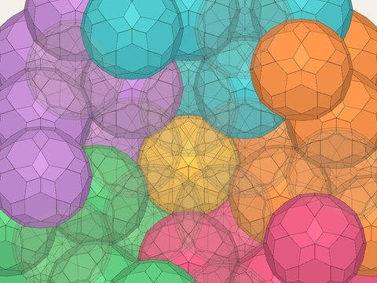
#30 A Fibonacci SpineFive periodic packings of the DICTO Ogdoecontahedron meet round a five-fold axis; with the central copy, the copies removed along the axis are exactly the canonical Fibonacci chain, checked exactly, until minimal removal thins it at height 12.8.In the book: Quanta of SpaceDICTO DOI10.5281/zenodo.23396361Read paperView in app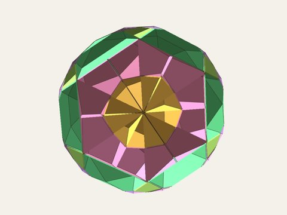
#29 TheaetetusAn icosahedron held exactly by its Cleo-Icos, grown to the DICTO Hecatodihedron in two exact stories: 215 pieces in closed layers, and 102 clean pieces that cut the icosahedron and dodecahedron with the same twenty cones.In the book: The Golden CycleIn the book: Quanta of SpaceDICTO DOI10.5281/zenodo.23378070Read paperView in app #28 The DICTO HecatodihedronFormally, the DICTO Truncated-Icosahedral Hecatodihedron. A convex solid of 102 faces from the Spheres of Dharma: the truncated icosahedron with a low pyramid on each hexagon, at the height where neighbouring triangles flatten into rhombi; exactly, the joined truncated icosahedron with its five-fold corners cut flat (Version 2).In the book: Quanta of SpaceDICTO DOI10.5281/zenodo.23360857Read paperView in app
#28 The DICTO HecatodihedronFormally, the DICTO Truncated-Icosahedral Hecatodihedron. A convex solid of 102 faces from the Spheres of Dharma: the truncated icosahedron with a low pyramid on each hexagon, at the height where neighbouring triangles flatten into rhombi; exactly, the joined truncated icosahedron with its five-fold corners cut flat (Version 2).In the book: Quanta of SpaceDICTO DOI10.5281/zenodo.23360857Read paperView in app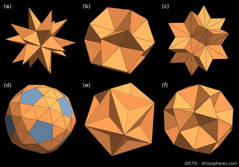
#27 Capturing the In-betweensThe in-between stages of the Chain of Karma, Spheres of Dharma and Bodhi Seed as solids: the great stellated dodecahedron, the excavated dodecahedron, the rhombic hexecontahedron, and a further convex solid, the DICTO Truncated-Icosahedral Hecatodihedron.In the book: The Golden CycleIn the book: Quanta of SpaceDICTO DOI10.5281/zenodo.23345502Read paperView in app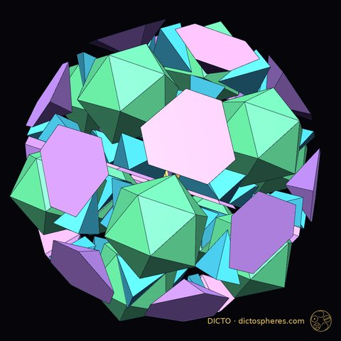
#26 DICTO ATOM-13×13Thirteen clusters of twelve around one, six golden and seven periodic, side by side, with 24 buildable kits.In the book: Quanta of SpaceDICTO DOI10.5281/zenodo.23333183Read paperView in app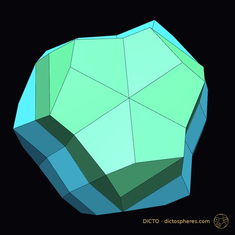
#25 DICTO Spheroid-13 RDA true rhombic dodecahedron wrapped by twelve keyed pieces: a nearly round block of thirteen that fills space by translation alone.In the book: Quanta of SpaceDICTO DOI10.5281/zenodo.23332821Read paperView in app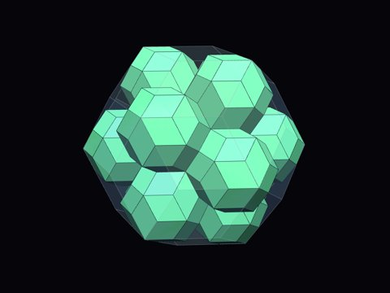
#24 The Bodhi SeedTwelve rhombic triacontahedra and one more inside a triacontahedron φ² times larger; the gap fills exactly with three convex piece types, in two ways.In the book: The Golden CycleIn the book: Quanta of SpaceDICTO DOI10.5281/zenodo.23311353Read paperView in app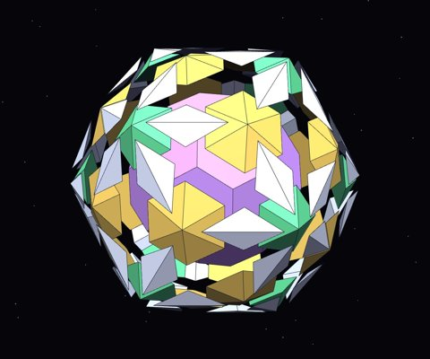
#23 Spheres of DharmaSix icosahedral shells, each filled exactly, repeating every φ³: icosahedron, icosidodecahedron, dodecahedron, fullerene cage, rhombic triacontahedron.In the book: The Golden CycleIn the book: Quanta of SpaceDICTO DOI10.5281/zenodo.23310833Read paperView in app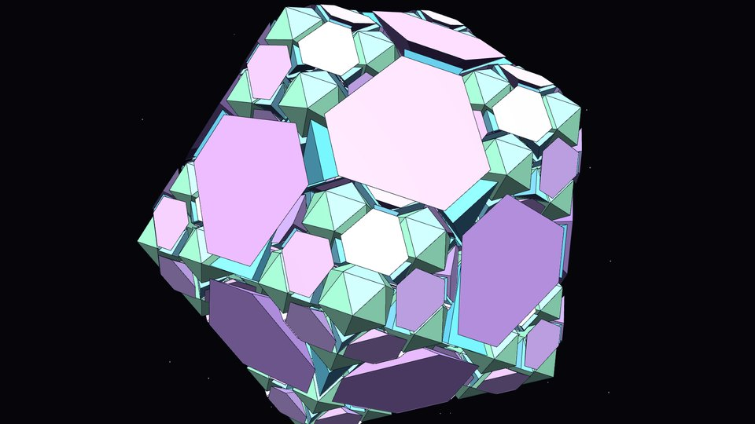
#22 The Chain of KarmaAn icosahedron and a dodecahedron, each filling the shell around the other, again and again like Russian dolls without end; DICTO built it to 20,497 pieces.The regular icosahedron and dodecahedron filled exactly as shells of each other, alternating without end (built and checked to 20,497 pieces). The centres of the Lotus seed's 13 icosahedra match the 600-cell's central vertex and its 12 neighbours, scaled by φ²; and its surface has the C60 fullerene pattern. Only the icosahedron is ever subdivided; the gap pieces occur at every scale.In the book: The Golden CycleIn the book: Quanta of SpaceDICTO DOI10.5281/zenodo.23310541Read paperView in app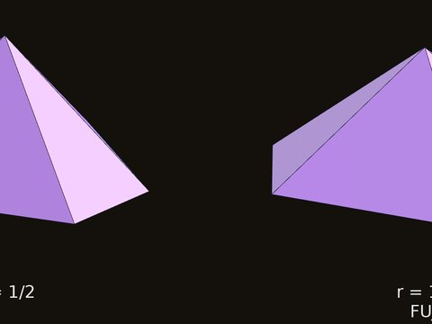
#20 The FUJI FamilyFUJI as one member of a family of pyramids on truncated triangles, indexed by the antiprisms. With the golden breathing pyrochlore, the wheel bound, and Cleo-Icos & Antonius, a new space-filling pair from the golden rhombohedron.In the book: Quanta of SpaceDICTO DOI10.5281/zenodo.23357896Read paperView in app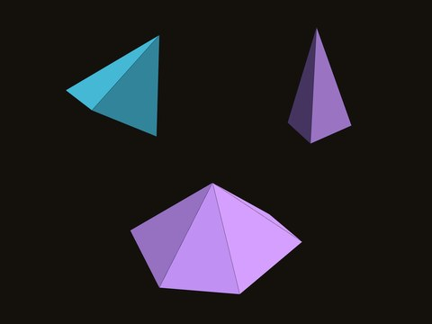
#19 AXE, CLEO and FUJIThe three pieces that close DICTO's thirteen-icosahedron cluster into one icosahedron of edge φ². AXE and CLEO are Mosseri–Sadoc tiles; FUJI is new. With printable nets.In the book: Alicia in WonderlandIn the book: Quanta of SpaceDICTO DOI10.5281/zenodo.23351291Read paperView in app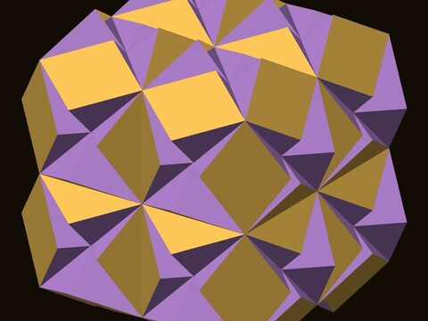
#18 The DICTO HexaA cube of 8 DICTO Hexa Jewels, its Hexa-Key and their 5 : 3 checkerboard.In the book: Quanta of SpaceDICTO DOI10.5281/zenodo.23376320Read paperView in app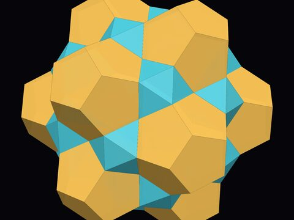
#14 The DICTO-StarAn icosidodecahedron, 12 dodecahedra and 20 tridiminished icosahedra closing exactly.In the book: Quanta of SpaceDICTO DOI10.5281/zenodo.23284213Read paperView in app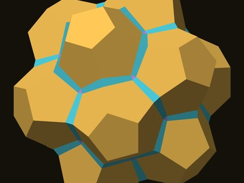
#13 The DICTO Dodeca-13The 13-dodecahedron cluster made solid, with two exact gap pieces.In the book: Quanta of SpaceDICTO DOI10.5281/zenodo.23284281Read paperView in app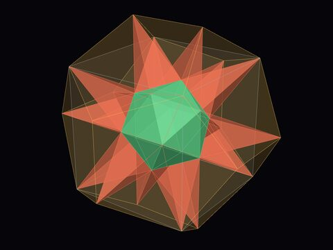
#8 The Euclid–Kepler–Pacioli CellAll five Platonic solids nest on 13 points in one periodic cell.In the book: Quanta of SpaceDICTO DOI10.5281/zenodo.23284106Read paperView in appWhat's new
- 7–23 Nov 2026 In the river now: DICTO's PET-bottle sculpture stands in the Takasegawa, Kyoto, at The 3rd Kyoto Takasegawa Art Festival, between Sanjo and Shijo streets, open 24 hours: see the photos · the festival map.
- Say hello Drop us a tetrapod: our visitor book is a heap of tetrapods on the Misaki coast, Osaka Bay, and every visit adds one: drop yours.
- Written about ScholaRef, 17 Oct 2026: the weekly mathematics round-up gives a section to The DICTO Truncated-Icosahedral Hecatodihedron (#28, DICTO DOI: 10.5281/zenodo.23360857), “A Hundred and Two Faces”: read the article.
- 12 Oct 2026 The icosidodecahedron as the meeting place of the icosahedron and dodecahedron: in their dual compound, their 30 edge pairs cross at its corners (checked). The fullerene cage wraps the dodecahedron at exactly one golden step.
Discoveries
DICTO's findings, each checked exactly in code and archived on Zenodo (10.5281/zenodo.23173809), newest first.
- #16 Sunstar clustersSix dodecahedra round a Dogstar, a Sunstar turned inside out; with four round a corner, an octet network→
- #15 DICTO Jewel clustersFour and six DICTO Jewels, solid, each filling space with stella octangulas; shared, the octet truss→
- #14 DICTO-StarAn icosidodecahedron with 12 dodecahedra and 20 tridiminished icosahedra, closing exactly→
- #13 The 13-dodecahedron cluster made solidIts gaps as two exact pieces, wedges and needles, and separable once built→
- #12 Star Chain ReactionGreat star, Sunstar, great star, Sunstar, nested exactly, each step touching→
- #11 The stretched dodecahedronThe dodecahedron stretched along a cube-face axis: 8 regular pentagons and hexagons→
- #10 DICTO Jewel (EKP windows)12 Penrose rhombus windows; with stella octangulas it fills space→
- #8 Euclid–Kepler–Pacioli cell and networkAll five Platonic solids nested in one cell of a cubic lattice→
- #5 Regular-hexagon elongated dodecahedronFound independently (known: Grünbaum, 2010)→
- #1 DICTO skewed rhombic dodecahedronA space-filler of 60° and 72° rhombi, and its two elongated forms→